Chapter 3: Network Layer — IP Addressing & Routing¶
The network layer (Layer 3) gives every device an address and works out how packets travel from one network to another, across a building or across the planet. In this chapter you will learn how IPv4 and IPv6 addresses work, how to carve networks into subnets, and how routers share maps of the Internet so your data always finds a path home.
3.1 IPv4 Addressing¶
An IPv4 address is a 32-bit number that identifies a device on a network, written as four numbers from 0 to 255 separated by dots, like 192.168.1.20. Part of the address names the network and the rest names the specific device (the host). Some ranges are reserved for special jobs, such as private home networks or testing your own computer.
IPv4 ranges to memorise
| Block | Used for | |
|---|---|---|
| Private | 10/8, 172.16/12, 192.168/16 | Internal LANs, translated by NAT |
| CGNAT shared | 100.64.0.0/10 | Between ISP NAT and customer routers |
| Loopback | 127.0.0.0/8 | The device itself (localhost) |
| Link-local (APIPA) | 169.254.0.0/16 | Self-assigned when DHCP fails |
| Documentation | 192.0.2/24, 198.51.100/24, 203.0.113/24 | Examples in books and manuals |
| Multicast (old Class D) | 224.0.0.0/4 | One-to-many group traffic |
| Reserved (old Class E) | 240.0.0.0/4 | Unusable on today's Internet |
| Limited broadcast | 255.255.255.255/32 | Everyone on the local link |
Only global unicast space is routed on the public Internet; everything else has a special job.
Think of it like…
An IPv4 address is like a postal address: the street name is the network portion and the house number is the host portion, and the default gateway is the post office where letters leaving your street are dropped off.
Real-world example
Priya's laptop at Maple Street Library gets 192.168.1.20 with mask 255.255.255.0, so its network is 192.168.1.0 and its host number is 20. When she opens a website, the laptop sees that the server is not on 192.168.1.x and sends the packet to the default gateway 192.168.1.1. The router then swaps her private address for the library's single public address using NAT. If the DHCP server is down, her laptop gives itself a 169.254.x.x address, which is a clue that something is wrong.
How it works¶
- Every interface gets a 32-bit address, written in dotted decimal (four 8-bit octets).
- The subnet mask or prefix length splits the address into a network portion and a host portion.
- If the destination is on the same network, the device delivers directly; otherwise it sends to the default gateway.
- Private (RFC 1918) addresses work inside organisations but must be translated by NAT to reach the Internet.
- Special ranges (loopback, link-local, broadcast, documentation) are never routed on the public Internet.
Who uses it
Every network technician, help-desk analyst and home user meets IPv4 addresses daily when configuring PCs, printers, routers and cloud servers.
Key takeaway
Memorise the RFC 1918 ranges: 10.0.0.0/8, 172.16.0.0/12 and 192.168.0.0/16; a 169.254.x.x address almost always means DHCP failed.
Going deeper
- A host decides 'local or remote' by ANDing its own mask with both its address and the destination; if the network parts match it ARPs for the target, otherwise for the gateway.
- The 32-bit space holds 4,294,967,296 addresses, but multicast and reserved Class E alone remove about 537 million, and private, loopback and other special blocks remove millions more.
- Addresses flow IANA → five RIRs → ISPs (Local Internet Registries) → customers; since exhaustion, companies buy or lease IPv4 on transfer markets for tens of US dollars per address.
- Routers recompute the IPv4 header checksum at every hop because the TTL changes; IPv6 dropped the header checksum entirely to make forwarding cheaper.
- Cloud providers now charge for scarcity: since February 2024 AWS bills every public IPv4 address hourly, pushing architects towards IPv6, NAT gateways and load balancers.
- Converting quickly between binary and decimal matters: 192 = 11000000, 224 = 11100000, 240 = 11110000, 248, 252, 254, 255 are the only valid mask octets besides 0 and 128.
Common mistakes & misconceptions
- Thinking 172.16.0.0/16 is the whole private block: RFC 1918 covers 172.16.0.0/12, i.e. 172.16.x.x to 172.31.x.x; 172.32.x.x is public.
- Assuming a successful 'ping 127.0.0.1' proves the network card works; loopback never touches the physical interface or the cable.
- Treating a 169.254.x.x address as the problem itself; it is a symptom, so troubleshoot the cable, VLAN or DHCP server.
- Answering subnet questions with classful thinking ('10.x is always /8'); since CIDR, only the configured prefix length decides the network size.
Try it: See your own IPv4 address, mask and default gateway¶
ipconfig # Windows
ip -4 addr show # Linux
ip route show default
Key protocols, devices, standards & tools¶
| Name | What it does | Example |
|---|---|---|
| IPv4 IETF RFC 791 · Protocol · Layer 3 · Current |
Internet Protocol version 4, published 1981: 32-bit addresses, giving about 4.3 billion possible addresses, with best-effort packet delivery. | Almost every home router, office LAN and cloud VM still uses IPv4, usually alongside IPv6. |
| IPv4 header IETF RFC 791 · Concept · Layer 3 · Current |
20-byte minimum header (up to 60 with options): version, length, DSCP/ECN, ID, flags, fragment offset, TTL, protocol, checksum, source, destination. | Wireshark shows 'Header Length: 20 bytes, TTL 64, Protocol TCP (6)' and the router recalculating the checksum after lowering TTL. |
| IP protocol numbers IANA Assigned Internet Protocol Numbers registry · Standard · Layer 3 · Current |
The header's Protocol field says what is inside: 1 ICMP, 6 TCP, 17 UDP, 47 GRE, 50 ESP, 89 OSPF. | A firewall rule 'permit 50' allows IPsec ESP, which has no ports because it is not TCP or UDP. |
| Classful addressing (Classes A–E) IETF RFC 791 (historic) · Concept · Layer 3 · Obsolete |
Original scheme: Class A 1–126 (/8), B 128–191 (/16), C 192–223 (/24), D 224–239 multicast, E 240–255 reserved. | Old textbooks call 10.0.0.0 a Class A network; CIDR replaced classes in 1993, but exams still ask about them. |
| Private address ranges IETF RFC 1918 · RFC · Layer 3 · Current |
Three ranges free for anyone to use internally: 10.0.0.0/8, 172.16.0.0/12 and 192.168.0.0/16. Not routed on the Internet. | A home router hands out 192.168.0.x addresses; a large company uses 10.x.x.x across hundreds of offices. |
| Loopback 127.0.0.0/8 IETF RFC 1122 / RFC 6890 · Concept · Layer 3 · Current |
Addresses that always point back to the same device; 127.0.0.1 ('localhost') is used to test the local network stack. | A web developer opens http://127.0.0.1:8080 to view a site running on their own laptop. |
| APIPA / IPv4 link-local 169.254.0.0/16 IETF RFC 3927 · RFC · Layer 3 · Current |
Self-assigned addresses a device picks when no DHCP server answers; they work only on the local link. | A help-desk ticket shows a PC with 169.254.33.7, so the analyst checks the cable and the DHCP server first. |
| Broadcast addresses IETF RFC 919 / RFC 922 · Concept · Layer 3 · Current |
255.255.255.255 is the limited broadcast; the all-ones host address of a subnet (e.g. 192.168.1.255) is its directed broadcast. | A DHCP Discover is sent to 255.255.255.255 because the new PC does not yet know any addresses. |
| Network and host portions IETF RFC 950 · Concept · Layer 3 |
The mask marks which bits name the network and which name the host; the all-zeros host is the network address. | In 172.16.5.40/16, the network is 172.16.0.0 and the host portion is 5.40. |
| Default gateway IETF RFC 1122 · Concept · Layer 3 |
The router a host sends packets to when the destination is outside its own subnet. | A printer with a wrong gateway can print locally but cannot send scan-to-email messages to the cloud mail server. |
| Unspecified / 'this network' 0.0.0.0 IETF RFC 6890 · Concept · Layer 3 |
Means 'no address yet' as a source, 'all interfaces' to a server, and 'any destination' as the default route 0.0.0.0/0. | A server listening on 0.0.0.0:443 accepts HTTPS connections on every one of its IP addresses. |
| Documentation ranges IETF RFC 5737 · RFC · Layer 3 · Current |
192.0.2.0/24, 198.51.100.0/24 and 203.0.113.0/24 are reserved for examples in books and manuals. | A training guide shows a firewall rule for 203.0.113.10 so nobody accidentally copies a real company's address. |
| Special-purpose address registry IETF RFC 6890 / IANA · RFC · Layer 3 · Current |
The official list of reserved IPv4 and IPv6 blocks and what each may be used for. | Engineers check the IANA registry when building 'bogon' filters that block reserved addresses at the Internet edge. |
| IPv4 exhaustion IANA / Regional Internet Registries · Concept · Layer 3 |
IANA handed out its last free /8 blocks in February 2011; regional registries ran dry afterwards (RIPE NCC in November 2019). | A start-up buying IPv4 space today pays on the transfer market or leases addresses instead of getting them free. |
| Shared Address Space (CGNAT) 100.64.0.0/10 IETF RFC 6598 · RFC · Layer 3 · Current |
A block reserved for ISPs between their carrier-grade NAT and customers' routers, so it never clashes with RFC 1918 ranges. | A mobile phone shows 100.72.14.9 as its address because the carrier shares public IPv4 addresses using CGNAT. |
| Regional Internet Registries (RIRs) ARIN, RIPE NCC, APNIC, LACNIC, AFRINIC under IANA · Organisation |
Five organisations that allocate IP addresses and AS numbers to ISPs and companies in their region. | A European hosting company becomes a RIPE NCC member to receive IPv6 space and an AS number. |
3.2 Subnetting & CIDR¶
Subnetting means cutting one big network into smaller ones by borrowing bits from the host part of the address. CIDR (Classless Inter-Domain Routing) writes the size of a network as a slash number, such as /24, which says how many bits belong to the network. Smaller subnets mean less broadcast noise, better security boundaries and less wasted address space.
Think of it like…
Subnetting is like dividing a large office floor into separate rooms with walls: same building (the original network), but each team gets its own room (subnet) with its own door (gateway).
Real-world example
Riverbend Dental has 192.168.10.0/24 and needs 4 equal subnets. Borrowing 2 bits gives /26 (mask 255.255.255.192), block size 64, 62 usable hosts each. Subnet 1: network 192.168.10.0, hosts .1–.62, broadcast .63. Subnet 2: network .64, hosts .65–.126, broadcast .127. Subnet 3: network .128, hosts .129–.190, broadcast .191. Subnet 4: network .192, hosts .193–.254, broadcast .255.
How it works¶
- Work out how many subnets (or hosts per subnet) you need.
- Borrow enough host bits: 2^n subnets for n borrowed bits; usable hosts = 2^h − 2 for h host bits.
- Find the block size: 256 minus the interesting mask octet (e.g. 256 − 192 = 64).
- List networks in steps of the block size; first address = network, last = broadcast, everything between = hosts.
- With VLSM, allocate the largest subnets first, then fit smaller ones into the remaining space.
- Summarise contiguous subnets into one shorter prefix to keep routing tables small.
Who uses it
Network engineers, cloud architects designing VPCs, and anyone sitting CompTIA Network+ or Cisco CCNA must subnet quickly and accurately.
Key takeaway
Learn the cheat sheet by heart: /24 = 254 hosts, /25 = 126, /26 = 62, /27 = 30, /28 = 14, /29 = 6, /30 = 2.
Going deeper
- The 'magic number' (256 minus the last non-255 mask octet) works in any octet: a /20 has mask 255.255.240.0, so subnets step 0, 16, 32, 48 in the third octet.
- To summarise, write the networks in binary and keep the common leading bits: 172.16.8.0/24 to 172.16.15.0/24 share 21 bits, so they become 172.16.8.0/21.
- Cloud subnets lose extra addresses: AWS and Azure reserve five per subnet (network, three provider addresses and the last), so a /28 gives 11 usable hosts, not 14.
- IPv6 subnetting is easier: LANs are always /64, and splitting on 4-bit nibble boundaries (/48 → /52 → /56 → /60 → /64) keeps addresses readable.
- The old rule of 2^n − 2 subnets (avoiding 'subnet zero' and the all-ones subnet) is obsolete; modern equipment uses all 2^n subnets.
- Good VLSM designs sort requirements largest first, leave 20-30% growth room, and keep each site inside one summarisable block so the routing table stays small.
Common mistakes & misconceptions
- Forgetting to subtract 2 for network and broadcast addresses: a /26 has 64 addresses but only 62 usable hosts (the /31 and /32 exceptions aside).
- Using a host address as the subnet ID, e.g. 192.168.1.20/27; the correct network is 192.168.1.0/27 because blocks start on multiples of 32.
- Overlapping subnets when allocating VLSM or cloud VPCs; overlapping CIDRs later block VPC peering, VPN routing and mergers.
- Typing a subnet mask where Cisco ACLs or OSPF network statements expect a wildcard mask (0.0.0.255, not 255.255.255.0).
Try it: Calculate subnet details with a subnet calculator (Linux)¶
ipcalc 192.168.10.64/26
# or in Python:
python -c "import ipaddress;n=ipaddress.ip_network('192.168.10.0/24');print([str(s) for s in n.subnets(new_prefix=26)])"
Key protocols, devices, standards & tools¶
| Name | What it does | Example |
|---|---|---|
| Subnet mask IETF RFC 950 · Concept · Layer 3 · Current |
A 32-bit pattern of 1s (network bits) followed by 0s (host bits), written like 255.255.255.0. | 255.255.255.192 has 26 ones, so it is the same as /26. |
| Prefix length (slash notation) IETF RFC 4632 · Concept · Layer 3 · Current |
The number after the slash tells how many leading bits are the network portion. | 10.20.0.0/16 means the first 16 bits (10.20) identify the network. |
| CIDR IETF RFC 4632 (replaced RFC 1519, 1993) · RFC · Layer 3 · Current |
Classless Inter-Domain Routing: networks of any prefix length, ending wasteful class boundaries and slowing routing-table growth. | An ISP gives a customer a /29 instead of a whole Class C, saving 248 addresses. |
| Binary AND (finding the network) Subnetting arithmetic · Concept · Layer 3 · Current |
ANDing an address with its mask keeps the network bits and zeroes the host bits, giving the subnet's network address. | 172.16.45.77 AND 255.255.240.0: third octet 45 AND 240 = 32, so the network is 172.16.32.0/20. |
| VLSM IETF RFC 1878 / RFC 4632 · Concept · Layer 3 · Current |
Variable Length Subnet Masking: using different-sized subnets within the same network to match real needs. | One /24 is split into a /25 for 100 staff PCs, a /27 for 25 phones and several /30 router links. |
| Supernetting / route summarisation IETF RFC 4632 · Concept · Layer 3 · Current |
Combining several contiguous networks into one shorter prefix that covers them all. | 192.168.0.0/24 to 192.168.3.0/24 are advertised as a single 192.168.0.0/22 route. |
| Usable hosts formula Subnetting arithmetic · Concept · Layer 3 |
Usable hosts = 2^(host bits) − 2, because the network and broadcast addresses cannot be assigned. | A /27 has 5 host bits: 2^5 − 2 = 30 usable addresses. |
| Wildcard mask Cisco IOS convention · Concept · Layer 3 |
The inverse of a subnet mask (0 = must match, 1 = any), used in ACLs and OSPF network statements. | Mask 255.255.255.0 becomes wildcard 0.0.0.255 in 'network 10.1.1.0 0.0.0.255 area 0'. |
| /24 (255.255.255.0) CIDR cheat sheet · Concept · Layer 3 |
256 addresses, 254 usable hosts; the classic size for an office or home LAN. | 192.168.1.0/24: hosts .1–.254, broadcast .255. |
| /25 (255.255.255.128) CIDR cheat sheet · Concept · Layer 3 |
128 addresses, 126 usable hosts; half of a /24. | 192.168.1.128/25: hosts .129–.254, broadcast .255. |
| /26 (255.255.255.192) CIDR cheat sheet · Concept · Layer 3 |
64 addresses, 62 usable hosts; a quarter of a /24. | 192.168.10.64/26: hosts .65–.126, broadcast .127. |
| /27 (255.255.255.224) CIDR cheat sheet · Concept · Layer 3 |
32 addresses, 30 usable hosts. | A guest Wi-Fi for a small café uses 10.0.5.32/27: hosts .33–.62, broadcast .63. |
| /28 (255.255.255.240) CIDR cheat sheet · Concept · Layer 3 |
16 addresses, 14 usable hosts. | A server VLAN of a dozen machines uses 10.0.9.16/28: hosts .17–.30, broadcast .31. |
| /29 (255.255.255.248) CIDR cheat sheet · Concept · Layer 3 |
8 addresses, 6 usable hosts; common size for a small block of public IPs from an ISP. | A business gets 203.0.113.8/29: hosts .9–.14, broadcast .15. |
| /30 (255.255.255.252) CIDR cheat sheet · Concept · Layer 3 |
4 addresses, 2 usable hosts; traditionally used for point-to-point router links. | A WAN link uses 10.255.0.0/30: router A is .1, router B is .2, broadcast .3. |
| /31 and /32 IETF RFC 3021 (/31) · RFC · Layer 3 · Current |
/31 gives exactly two addresses for point-to-point links with no broadcast; /32 identifies a single host. | An ISP numbers backbone links with /31s and router loopbacks with /32s to save addresses. |
3.3 IPv6¶
IPv6 is the newer version of the Internet Protocol, using 128-bit addresses written in hexadecimal, like 2001:db8::1. It provides so many addresses that every device can have a globally unique one without NAT. Devices can configure themselves automatically, and most modern networks run IPv4 and IPv6 side by side.
IPv4 vs IPv6 at a glance
| IPv4 | IPv6 | |
|---|---|---|
| Address size | 32 bits (~4.3 billion) | 128 bits (~3.4 × 10^38) |
| Written as | 192.168.1.20 | 2001:db8:4a:10::42 |
| Header | 20-60 bytes, checksum | 40 bytes fixed, no checksum |
| Address resolution | ARP (broadcast) | NDP (ICMPv6 multicast) |
| Auto-configuration | DHCP or APIPA | SLAAC and/or DHCPv6 |
| Fragmentation | Sender or routers | Sender only (min MTU 1280) |
| Private space | RFC 1918 + NAT | ULA fd00::/8; NAT rarely needed |
| Loopback | 127.0.0.1 | ::1 |
IPv6 is not just longer addresses: broadcast, ARP, header checksum and router fragmentation are all gone.
Think of it like…
If IPv4 is a city phone book that has run out of numbers, IPv6 is a new numbering plan with enough numbers for every grain of sand to have its own phone line.
Real-world example
Ahmed's phone joins his home Wi-Fi and immediately gets fe80::1c2a:4bff:fe11:9a3d (link-local). The router sends a Router Advertisement with prefix 2001:db8:4a:10::/64, so the phone builds its own global address with SLAAC. The full address 2001:0db8:004a:0010:0000:0000:0000:0042 shortens to 2001:db8:4a:10::42 by dropping leading zeros and replacing one run of all-zero groups with '::'. YouTube now reaches him over IPv6 with no NAT in the way.
How it works¶
- An address is 128 bits written as eight groups of four hex digits separated by colons.
- Shorten it: drop leading zeros in each group, and replace one longest run of all-zero groups with '::' (only once).
- Every interface automatically has a link-local fe80:: address for talking on the local link.
- Routers advertise the network prefix (normally a /64); hosts use SLAAC, DHCPv6, or both, to build global addresses.
- Packets use a simpler fixed 40-byte header; there is no broadcast, multicast is used instead.
- Dual stack runs IPv4 and IPv6 together while the world migrates.
Who uses it
Mobile carriers, cloud providers, ISPs and large enterprises run IPv6 at scale; around half of Google's users reached it over IPv6 by 2026.
Key takeaway
You may use '::' only once in an address, and a standard LAN subnet is always a /64.
Going deeper
- The 128-bit space holds about 3.4 × 10^38 addresses; one /64 alone has 18.4 quintillion interface IDs, which is why scanning IPv6 subnets address-by-address is impractical.
- Extension headers are chained by the Next Header field: Hop-by-Hop (0), Routing (43), Fragment (44), ESP (50), AH (51), Destination Options (60), then TCP (6) or UDP (17).
- An interface normally holds several addresses at once: link-local, one or more global addresses, temporary privacy addresses and possibly a ULA; RFC 6724 rules choose the source address.
- Router Advertisement flags decide configuration: A (autonomous) allows SLAAC, M asks hosts to use stateful DHCPv6 and O offers extra options; the default gateway always comes from RAs.
- Transition tools: dual stack is the default, NAT64/DNS64 and 464XLAT serve IPv6-only mobile networks, and old tunnels such as 6to4 and Teredo are deprecated.
- Reverse DNS for IPv6 uses ip6.arpa with every hex nibble reversed, so automated tooling, not hand-written zone files, is normal in practice.
Common mistakes & misconceptions
- Writing '::' twice in one address (2001::db8::1); it becomes ambiguous, so only one run of zero groups may be compressed.
- Using a LAN prefix longer than /64; SLAAC and many features assume 64-bit interface IDs, so keep /64 on every LAN segment.
- Believing IPv6 is insecure 'because there is no NAT'; a stateful firewall gives the same inbound protection without address translation.
- Blocking all ICMPv6 like old IPv4 habits; Neighbour Discovery, router discovery and Path MTU Discovery all stop working.
Try it: Check your IPv6 addresses and test IPv6 connectivity¶
ipconfig # Windows: look for 'IPv6 Address' and 'Link-local'
ip -6 addr show # Linux
ping -6 google.com
Key protocols, devices, standards & tools¶
| Name | What it does | Example |
|---|---|---|
| IPv6 IETF RFC 8200 (replaced RFC 2460) · Protocol · Layer 3 · Current |
Internet Protocol version 6 with 128-bit addresses, a streamlined header and extension headers instead of options. | Mobile networks such as T-Mobile US run IPv6-only to phones, translating to IPv4 only when needed. |
| IPv6 header and extension headers IETF RFC 8200 · Concept · Layer 3 · Current |
Fixed 40-byte header (version, traffic class, flow label, payload length, next header, hop limit, addresses); options live in chained extension headers. | A fragmented IPv6 packet shows Next Header 44 (Fragment) before the UDP header (17) in Wireshark. |
| IPv6 addressing architecture IETF RFC 4291 · RFC · Layer 3 · Current |
Defines unicast, multicast and anycast address types, prefixes and interface identifiers. | It explains why ff02::1 reaches all nodes on a link and ::1 is loopback. |
| Text representation and shortening IETF RFC 5952 · RFC · Layer 3 · Current |
Rules for writing addresses: lowercase hex, remove leading zeros, '::' replaces the longest run of zero groups once. | 2001:0db8:0000:0000:0000:ff00:0042:8329 is written 2001:db8::ff00:42:8329. |
| Global unicast 2000::/3 IETF RFC 4291 / IANA · Concept · Layer 3 · Current |
Publicly routable IPv6 addresses, the equivalent of public IPv4 addresses. | An ISP assigns a home a /56 from 2a01:: space, giving 256 separate /64 subnets. |
| Prefix allocation sizes (/48, /56, /64) IETF RFC 6177; RIR policies · Concept · Layer 3 · Current |
Typical sizes: an ISP gets /32 or larger, a business site /48, a home /56 or /48, and every LAN a /64. | A /48 contains 65,536 /64 subnets, so a university can give every building and VLAN its own /64 without NAT. |
| Link-local fe80::/10 IETF RFC 4291 · Concept · Layer 3 · Current |
Automatic addresses valid only on one link; used for neighbour discovery and as routers' next-hop addresses. | OSPFv3 routers form neighbours using fe80:: addresses on each link. |
| Unique local addresses fc00::/7 IETF RFC 4193 · RFC · Layer 3 · Current |
Private IPv6 space for internal use; in practice fd00::/8 with a random 40-bit global ID. | A lab uses fd3c:9a21:7b00::/48 for internal services that should never reach the Internet. |
| Multicast ff00::/8 IETF RFC 4291 · Concept · Layer 3 · Current |
One-to-many addresses; IPv6 has no broadcast, so multicast groups like ff02::1 (all nodes) do that job. | Routers listen on ff02::2 (all routers) for Router Solicitation messages. |
| IPv6 anycast address type IETF RFC 4291 · Concept · Layer 3 · Current |
Anycast addresses come from ordinary unicast space and look identical; RFC 4291 also defines a Subnet-Router anycast address (prefix with all-zero interface ID). | Packets sent to 2001:db8:5:1:: (the Subnet-Router anycast of 2001:db8:5:1::/64) reach whichever router on that link answers first. |
| Loopback ::1 and unspecified :: IETF RFC 4291 · Concept · Layer 3 · Current |
::1 is the device itself (like 127.0.0.1); :: means 'no address' (like 0.0.0.0). | ping ::1 tests that the local IPv6 stack is working. |
| Documentation prefix 2001:db8::/32 IETF RFC 3849 · RFC · Layer 3 · Current |
A prefix reserved for examples in documentation and training material. | Textbooks write 2001:db8:acad:1::/64 so examples never collide with real networks. |
| SLAAC IETF RFC 4862 · Protocol · Layer 3 · Current |
Stateless Address Autoconfiguration: hosts combine the router-advertised prefix with their own interface ID. | A smart TV joins the network and builds its global IPv6 address without any DHCP server. |
| EUI-64 interface ID IETF RFC 4291 / IEEE · Concept · Layer 3 · Legacy |
Builds a 64-bit interface ID from a 48-bit MAC by inserting FFFE and flipping the seventh bit. | MAC 00:1a:2b:3c:4d:5e becomes interface ID 021a:2bff:fe3c:4d5e. |
| Temporary (privacy) addresses IETF RFC 8981 (replaced RFC 4941) · RFC · Layer 3 · Current |
Random, regularly changing interface IDs for outgoing connections so websites cannot track a device's MAC. | Windows and macOS show a 'Temporary IPv6 Address' that changes every day or so. |
3.4 NAT & Address Translation¶
Network Address Translation (NAT) is a router feature that rewrites IP addresses (and often port numbers) as packets pass through. It lets many devices with private addresses share one or a few public addresses. It was created to save IPv4 addresses, and it also hides internal addresses from the outside world.

Think of it like…
NAT is like a company receptionist: outsiders only know the main phone number, and the receptionist keeps a list of which extension asked for which call so replies get to the right desk.
Real-world example
The Okafor family has 12 devices on 192.168.0.0/24 but only one public address, 198.51.100.23. When a laptop at 192.168.0.15:51544 opens a website, the router rewrites the source to 198.51.100.23:40001 and records this mapping. The reply arrives on port 40001, the router looks up its table and forwards it to 192.168.0.15:51544. For their game server, they add a port-forwarding rule so incoming traffic on UDP 27015 goes to 192.168.0.40.
How it works¶
- An inside host sends a packet with its private source address.
- The NAT router replaces the source address (and port, for PAT) with a public one.
- It stores the mapping in a translation table.
- Replies to the public address and port are matched against the table and rewritten back.
- Unsolicited inbound traffic is dropped unless a static NAT or port-forwarding rule exists.
Who uses it
Every home router, office firewall and mobile carrier uses NAT; VoIP and video-call apps rely on STUN, TURN and ICE to work through it.
Key takeaway
PAT (NAT overload) is what home routers do: many inside hosts share one public IP, distinguished by port numbers.
Going deeper
- One public address offers about 64,000 usable source ports per protocol, so CGNAT gear hands each subscriber a block (often 512 to a few thousand ports) and logs it for legal traceability.
- Mappings expire: RFC 4787 asks UDP mappings to last at least two minutes and RFC 5382 asks established TCP mappings to survive at least 2 hours 4 minutes of idleness.
- Application Level Gateways rewrite addresses embedded in payloads (FTP, SIP); the SIP ALG on cheap routers is notorious for breaking VoIP and is usually disabled.
- Hairpinning (NAT loopback) lets an inside host reach another inside host via the public address; without it, internal users cannot open their own port-forwarded service by its public name.
- On Linux, nftables or iptables implement NAT with SNAT/MASQUERADE (source) and DNAT (destination) rules on top of the conntrack connection table.
- IPv6 normally avoids NAT; NPTv6 (RFC 6296) exists for stateless prefix translation, but a stateful firewall is the standard edge design.
Common mistakes & misconceptions
- Treating NAT as a firewall; it hides addresses, but security comes from stateful filtering rules, which IPv6 networks need too.
- Setting up port forwarding behind CGNAT; if the router's WAN address is in 100.64.0.0/10, the ISP's NAT must forward instead, or use IPv6 or a tunnel.
- Forgetting that a static NAT or port forward still needs a matching firewall or ACL permit before inbound traffic will pass.
Try it: Compare your private address with the public address the Internet sees¶
ipconfig | findstr IPv4 # Windows: your private address
curl https://api.ipify.org # public address after NAT
Key protocols, devices, standards & tools¶
| Name | What it does | Example |
|---|---|---|
| Traditional NAT IETF RFC 3022 (terms in RFC 2663) · RFC · Layer 3 · Current |
Defines basic NAT and NAPT for translating private addresses to public ones at a network border. | A small office firewall translates its 10.0.0.0/24 LAN to one public address. |
| Inside local / inside global (Cisco terms) Cisco IOS NAT terminology · Concept · Layer 3 · Current |
Inside local = private address of the inside host; inside global = public address representing it; outside global = the remote server's real address. | 'show ip nat translations' lists inside local 192.168.0.15:51544 mapped to inside global 198.51.100.23:40001. |
| Static NAT IETF RFC 3022 · Concept · Layer 3 · Current |
A fixed one-to-one mapping between a private address and a public address. | Mail server 10.0.0.25 is always reachable from outside as 203.0.113.25. |
| Dynamic NAT IETF RFC 3022 · Concept · Layer 3 · Current |
Inside hosts borrow a public address from a pool while they need it, one-to-one, then release it. | A branch has a pool of 8 public addresses shared by staff PCs as they go online. |
| PAT / NAPT (NAT overload) IETF RFC 3022 · Concept · Layer 4 · Current |
Many inside hosts share one public address; each connection is tracked by a unique source port. | Twenty phones in a café all appear online as 198.51.100.7, each with a different port. |
| NAT mapping behaviour (cone vs symmetric) IETF RFC 4787 (UDP), RFC 5382 (TCP) · RFC · Layer 4 · Current |
Endpoint-independent ('cone') NATs reuse one public port for all destinations; symmetric NATs pick a new port per destination, defeating STUN. | Two gamers behind cone NATs connect peer-to-peer, but a symmetric corporate NAT forces their console onto a relay server. |
| Port forwarding Router feature (destination NAT) · Concept · Layer 4 · Current |
A rule that sends inbound traffic on a public port to a chosen inside host and port. | TCP 8443 on the public IP is forwarded to a home NAS at 192.168.1.50:443. |
| Carrier-Grade NAT (CGNAT) IETF RFC 6888 (requirements), RFC 6598 (address space) · Technology · Layer 3 · Current |
Large-scale NAT run by an ISP so thousands of customers share a small pool of public IPv4 addresses. | A gamer cannot host a server because the ISP's CGNAT, not their home router, holds the public address. |
| STUN IETF RFC 8489 (replaced RFC 5389) · Protocol · Layer 7 · Current |
Lets a device ask a server 'what public address and port do you see me as?'; usually UDP 3478. | A video-call app learns its public mapping via STUN before sharing it with the other caller. |
| TURN IETF RFC 8656 (replaced RFC 5766) · Protocol · Layer 7 · Current |
A relay server that forwards media when two peers cannot connect directly through their NATs. | Behind strict corporate firewalls, a WebRTC meeting falls back to relaying through a TURN server. |
| ICE IETF RFC 8445 (replaced RFC 5245) · Protocol · Layer 7 · Current |
Interactive Connectivity Establishment: gathers local, STUN and TURN candidates and tests them to find the best working path. | WebRTC in every browser uses ICE to connect two users' cameras peer-to-peer. |
| UPnP IGD and PCP Open Connectivity Foundation (UPnP); IETF RFC 6887 (PCP) · Protocol · Layer 7 · Current |
Protocols that let applications ask the router to open port mappings automatically. | A game console opens its own ports via UPnP; security teams often disable UPnP on business routers. |
| NAT Traversal for IPsec (NAT-T) IETF RFC 3947 / RFC 3948 · RFC · Layer 4 · Current |
Wraps IPsec ESP packets in UDP port 4500 so VPNs work through NAT devices. | A remote worker's IPsec VPN switches to UDP 4500 when it detects a home NAT router. |
3.5 IPv6 Transition: Dual Stack, Tunnels & Translation¶
The Internet cannot switch from IPv4 to IPv6 overnight, so transition mechanisms let both work side by side. There are three families: dual stack (run both), tunnelling (carry one inside the other) and translation (convert between them). Most networks use dual stack today, while mobile networks increasingly run IPv6-only and translate for the IPv4 sites that remain.

Think of it like…
It is like a country changing which side of the road it drives on in stages: some roads get lanes for both (dual stack), some vehicles ride a train through the other system (tunnels), and at borders cars swap number plates (translation).
Real-world example
Northgate Mobile runs its phone network IPv6-only to save scarce IPv4 addresses. A phone visiting an IPv6-ready site connects natively. For an IPv4-only site, the DNS64 resolver invents an address inside 64:ff9b::/96 and the carrier's NAT64 gateway translates the traffic. An old game app with a hard-coded IPv4 address still works because the phone's own translator (CLAT) converts it to IPv6 first: that combination is 464XLAT.
How it works¶
- Start with dual stack in the core, data centre and Internet edge, then enable IPv6 on hosts.
- Where an access network cannot carry IPv6, tunnel it (6in4, 6rd) as a temporary bridge.
- Where IPv4 addresses run out, go IPv6-only and translate (NAT64/DNS64, 464XLAT).
- ISPs may carry customers' IPv4 inside IPv6 (DS-Lite, MAP-E/MAP-T) to share public IPv4 addresses.
- Clients choose the best path with Happy Eyeballs; IPv4 is retired wherever possible.
Who uses it
ISP and mobile network engineers, enterprise and cloud architects planning IPv6, and government networks with IPv6-only mandates; CCNA expects IPv6 basics and Network+ lists transition methods.
Key takeaway
Group mechanisms into three families: dual stack (both protocols), tunnelling (6in4, 6to4, Teredo, 6rd, DS-Lite) and translation (NAT64/DNS64, 464XLAT, SIIT); 6to4 and Teredo are obsolete.
Going deeper
- Order of preference: dual stack where IPv4 is still plentiful, IPv6-only plus translation where it is not, and tunnels only as a temporary bridge across IPv4-only segments.
- The NAT64 well-known prefix 64:ff9b::/96 (RFC 6052) embeds the IPv4 address in the last 32 bits; 64:ff9b:1::/48 (RFC 8215) is reserved for local translation deployments.
- DNS64 cannot help apps that use literal IPv4 addresses and complicates DNSSEC validation of synthesised answers; 464XLAT's on-device CLAT solves the literal-address problem.
- Apple has required iOS apps to work on IPv6-only NAT64 networks since 2016, and Android has included a 464XLAT CLAT since version 4.3, which is why mobile carriers moved first.
- US OMB memo M-21-07 (2020) set federal targets of 20% of IP-enabled assets IPv6-only by the end of FY2023, 50% by FY2024 and 80% by FY2025.
- Tunnels shrink the usable MTU (6in4 costs 20 bytes, DS-Lite 40 bytes), so path MTU discovery and ICMPv6 'Packet Too Big' messages must never be blocked.
Common mistakes & misconceptions
- Enabling IPv6 on hosts but forgetting IPv6 firewall rules, so devices become reachable over IPv6 paths that IPv4 rules never covered.
- Assuming IPv6 can wait because NAT works; mobile, cloud and government networks already prefer or require IPv6.
- Blocking all ICMPv6, which breaks neighbour discovery and path MTU discovery, especially across tunnels.
- Treating 6to4 or Teredo as valid choices today; both are obsolete and should be disabled.
Try it: Is your connection IPv6, IPv4 or translated? (your own machine)¶
curl -6 https://ifconfig.co # your IPv6 address, if you have one
curl -4 https://ifconfig.co # your IPv4 address
nslookup -type=AAAA ipv4only.arpa # on a NAT64/DNS64 network: 64:ff9b::c000:aa
ping -6 example.com
Key protocols, devices, standards & tools¶
| Name | What it does | Example |
|---|---|---|
| Dual stack IETF RFC 4213 · Concept · Layer 3 · Current |
Running IPv4 and IPv6 at the same time on hosts and routers; the most common migration approach. | A browser uses Happy Eyeballs (RFC 8305) to try IPv6 and IPv4 and pick whichever connects first. |
| 6in4 manual tunnel IETF RFC 4213 (IP protocol 41) · Protocol · Layer 3 · Current |
Wraps IPv6 packets directly inside IPv4 (protocol 41) between two configured endpoints; simple and stateless, with no encryption. | A home lab gets IPv6 from a tunnel broker such as Hurricane Electric's tunnelbroker.net over a 6in4 tunnel. |
| 6to4 IETF RFC 3056; anycast relays deprecated by RFC 7526 (2015) · Protocol · Layer 3 · Obsolete |
Automatic tunnelling using 2002::/16 prefixes built from a public IPv4 address; unreliable public relays led to its deprecation. | An old router config with addresses starting 2002:c000:221:: reveals forgotten 6to4 tunnelling that should be removed. |
| Teredo IETF RFC 4380 (designed by Microsoft); UDP 3544 · Protocol · Layer 3 · Obsolete |
Tunnels IPv6 inside UDP so it can cross IPv4 NAT routers; once enabled by default in Windows, now deprecated and rarely used. | Security teams block UDP 3544 outbound because Teredo tunnels could bypass IPv4-only firewall rules. |
| 6rd (IPv6 Rapid Deployment) IETF RFC 5969 · Protocol · Layer 3 · Legacy |
An ISP-controlled variant of 6to4 using the ISP's own prefix, letting IPv4-only access networks deliver IPv6 to homes quickly. | French ISP Free used 6rd in 2007 to give its subscribers IPv6 within weeks, long before its access network was upgraded. |
| DS-Lite IETF RFC 6333 (B4 and AFTR elements) · Technology · Layer 3 · Current |
Dual-Stack Lite: the home router tunnels IPv4 inside IPv6 to the ISP, where a carrier-grade NAT called the AFTR translates it. | A cable customer has native IPv6 but shares a public IPv4 address through the ISP's AFTR, so IPv4 port forwarding is impossible. |
| MAP-E / MAP-T IETF RFC 7597 (MAP-E), RFC 7599 (MAP-T) · Technology · Layer 3 · Current |
Stateless ISP methods that share one public IPv4 address among customers by giving each a fixed port range, carried over IPv6. | Many Japanese ISPs use MAP-E: a subscriber's router may only use ports inside its assigned block for IPv4. |
| NAT64 IETF RFC 6146 · Protocol · Layer 3 · Current |
Translates between IPv6-only clients and IPv4-only servers using the well-known prefix 64:ff9b::/96. | An IPv6-only phone reaches an IPv4-only website through the carrier's NAT64 gateway. |
| DNS64 IETF RFC 6147 · Protocol · Layer 7 · Current |
A DNS server that invents IPv6 (AAAA) answers for IPv4-only names so clients use NAT64. | The resolver returns 64:ff9b::c000:221 for a site that only has the IPv4 address 192.0.2.33. |
| 464XLAT IETF RFC 6877 · Technology · Layer 3 · Current |
Double translation (IPv4 to IPv6 on the device, back to IPv4 at the carrier) so IPv4-only apps work on IPv6-only networks. | Android phones on IPv6-only mobile networks use 464XLAT for old apps with hard-coded IPv4 addresses. |
| SIIT (stateless IP/ICMP translation) IETF RFC 7915 (replaced RFC 6145) · RFC · Layer 3 · Current |
The algorithm that converts IPv4 headers to IPv6 and back, field by field; the engine inside NAT64 and 464XLAT. | A data centre uses stateless translation so IPv6-only web servers can still be reached by IPv4 visitors through mapped addresses. |
| IPv6-only preferred (DHCP option 108) IETF RFC 8925 (2020) · RFC · Layer 7 · Current |
DHCPv4 option letting capable clients give up their IPv4 address and run IPv6-only, while older devices still receive IPv4. | On an IPv6-mostly conference Wi-Fi, phones and laptops that support it drop IPv4, so the IPv4 pool serves only a few old devices. |
| PREF64 (NAT64 prefix discovery) IETF RFC 8781 (Router Advertisement option); RFC 7050 (ipv4only.arpa method) · RFC · Layer 3 · Current |
Ways for hosts to learn which NAT64 prefix the network uses, so their built-in translator (CLAT) can work correctly. | A router advertises PREF64 64:ff9b::/96 in its Router Advertisements, and a laptop's CLAT starts translating immediately. |
| IPv6-mostly networks Operational practice (RFC 8925 plus CLAT on hosts); IETF v6ops guidance · Concept · Layer 3 · Emerging |
One network serving both kinds of client: IPv6-only for devices that support it, dual stack for those that do not. | A university's Wi-Fi goes IPv6-mostly; most clients stop using IPv4, while legacy printers carry on as before. |
| IPv6 adoption & mandates Google IPv6 statistics; US OMB memo M-21-07 · Concept · Current |
Google measured IPv6 above 50% of its traffic for the first time in March 2026; US federal agencies are being pushed to IPv6-only. | France and India both exceed 70% IPv6 use, while some countries remain far lower, so dual stack will be needed for years. |
3.6 IP Address Planning: A Design Case Study¶
An IP address plan decides which address ranges go to which sites, buildings and VLANs before anything is configured. A good plan leaves room to grow, keeps related networks in neat blocks that routers can summarise, and makes addresses easy to read. Fixing a bad plan later means renumbering, which is slow and risky.
Think of it like…
Planning addresses is like planning street numbers for a new town: you reserve a block of numbers for each district and leave gaps for future houses, so the post office can sort by district and nobody has to change address later.
Real-world example
Rowan Logistics has a head office and 20 depots. The engineer keeps 10.0.0.0/16 for head office and gives each depot a /20 from 10.16.0.0/12 (depot 1 = 10.16.0.0/20, depot 2 = 10.16.16.0/20), so all depots summarise as one route. Inside each depot, staff VLAN 10 and voice VLAN 20 get a /24 each, cameras a /25, and router links come from /31s. For IPv6, the company's /48 gives each depot a /56 and every VLAN a /64, with the VLAN number visible in the address.
How it works¶
- Gather requirements: sites, VLANs per site, and hosts per VLAN today and in five years.
- Choose private space (usually 10.0.0.0/8) that avoids ranges used by partners, VPN users and cloud.
- Allocate hierarchically (region, site, VLAN) on bit boundaries so each level summarises.
- Fix conventions inside every subnet: gateway at .1, static infrastructure low, DHCP pool high.
- Design IPv6 in parallel: a /48 per organisation or site, a /64 per VLAN, aligned to nibbles.
- Record everything in IPAM before configuring, and review usage regularly.
Who uses it
Network designers and architects, cloud engineers choosing VPC ranges and anyone setting up a new office; interviews often ask candidates to sketch a simple address plan.
Key takeaway
Allocate on bit boundaries and size for growth: a /20 must start where the third octet is a multiple of 16, and a well-aligned block can be advertised as a single summary route.
Going deeper
- Summarisation shrinks routing tables and hides instability: a flapping VLAN inside 10.16.0.0/20 stays behind one stable summary instead of disturbing every router in the network.
- Cloud providers impose limits: an AWS VPC block must be between /16 and /28, and AWS reserves five addresses in every subnet, so plan cloud blocks generously.
- Leave room to grow in place: if site 1 (10.16.0.0/20) might double, start site 2 at 10.16.32.0 so site 1 can later expand into the contiguous 10.16.0.0/19.
- RFC 6177 recommends giving end sites enough IPv6 space for many subnets, commonly a /48 for businesses and a /56 for homes; RIPE-690 documents current ISP practice.
- Mergers often collide on 10.0.0.0/8 or 192.168.1.0/24; NAT between overlapping networks works, but complicates every application, firewall rule and troubleshooting session.
- Helpful tools: IPAM systems such as NetBox or Infoblox, command-line subnet calculators like ipcalc, and Python's ipaddress module for scripting allocations.
Common mistakes & misconceptions
- Sizing subnets exactly for today's host count, so one new floor of devices forces a disruptive renumbering.
- Scattering a site's subnets across unrelated blocks, so the site cannot be summarised and every router learns dozens of extra routes.
- Using 192.168.0.0/24 or 192.168.1.0/24 for office networks, which collide with remote workers' home routers over VPN.
- Making IPv6 client subnets smaller than /64, which breaks SLAAC and many devices.
Try it: Plan subnets with Python's built-in ipaddress module (runs locally)¶
python3
>>> import ipaddress as ip
>>> site = ip.ip_network('10.16.0.0/20')
>>> list(site.subnets(new_prefix=24))[:3]
[IPv4Network('10.16.0.0/24'), IPv4Network('10.16.1.0/24'), IPv4Network('10.16.2.0/24')]
>>> list(ip.ip_network('2001:db8:acad::/48').subnets(new_prefix=56))[1]
IPv6Network('2001:db8:acad:100::/56')
Key protocols, devices, standards & tools¶
| Name | What it does | Example |
|---|---|---|
| Requirements & growth headroom Network design practice · Concept · Layer 3 · Current |
Count sites, VLANs and hosts now, then plan for growth (often double, or five years ahead) so subnets need not be resized soon. | A warehouse VLAN with 90 scanners gets a /24, not a /25, because a second shift of devices is already planned. |
| Choosing private address ranges IETF RFC 1918 (10.0.0.0/8, 172.16.0.0/12, 192.168.0.0/16) · Concept · Layer 3 · Current |
Pick a private block that will not clash with home networks, partners, cloud networks or future acquisitions; 10.0.0.0/8 is the roomiest. | Avoiding 192.168.0.0/24 and 192.168.1.0/24 for offices prevents clashes when staff connect by VPN from home routers using them. |
| Hierarchical allocation Design practice enabling route aggregation (RFC 4632) · Concept · Layer 3 · Current |
Hand out address space top-down (region, site, building, VLAN) so each level's networks sit inside one contiguous block. | All of Region North lives in 10.32.0.0/11, so the core router needs only one route to reach every northern site. |
| Bit-boundary alignment CIDR rule (RFC 4632) · Concept · Layer 3 · Current |
A block containing 2^n addresses must start on a multiple of its own size; misaligned blocks cannot be configured or summarised. | 10.16.16.0/20 is valid, but 10.16.8.0/20 is not, because a /20's third octet must be a multiple of 16. |
| Largest-subnets-first allocation VLSM design method · Concept · Layer 3 · Current |
When carving variable-sized subnets from one block, allocate the biggest first so smaller ones fit into the gaps without overlapping. | From 10.20.0.0/22: staff /23 at 10.20.0.0, printers /25 at 10.20.2.0, cameras /26 at 10.20.2.128, then /31 links. |
| Readable numbering scheme Design practice · Concept · Layer 3 · Current |
Encode meaning in the address, for example the site number in the second octet and the VLAN ID in the third. | In 10.12.30.0/24, '12' is site 12 and '30' is VLAN 30, so an engineer recognises site 12's cameras instantly. |
| Gateway & static address conventions Design practice · Concept · Layer 3 · Current |
Reserve the same positions in every subnet: gateway at .1, routers and infrastructure next, static devices low, DHCP pool high. | Every VLAN uses .1 for the virtual gateway, .2-.3 for the two routers, .10-.49 for static devices and .50-.250 for DHCP. |
| Infrastructure blocks (loopbacks & links) Design practice; /31 links per RFC 3021 · Concept · Layer 3 · Current |
Dedicated ranges for router loopbacks (/32s) and point-to-point links (/31s or /30s), kept separate from user subnets. | 10.255.0.0/24 holds 256 loopbacks and 10.255.1.0/24 holds 128 /31 links, keeping routing tables tidy and easy to filter. |
| Management address block Design practice · Concept · Layer 3 · Current |
A dedicated range for device management interfaces, out-of-band ports and jump hosts, protected by ACLs. | All switch management addresses live in 10.254.0.0/16, and only the admin jump-host subnet may open SSH sessions to it. |
| IPv6 site and VLAN numbering IETF RFC 6177; RIPE-690 (ISP practice) · Concept · Layer 3 · Current |
Map sites and VLANs into the bits between /48 and /64, so every address shows where it lives; never give hosts less than a /64. | 2001:db8:acad:1030::/64 means site 1, VLAN 30, so staff can read an address without opening a spreadsheet. |
| Nibble boundaries IPv6 design practice · Concept · Layer 3 · Current |
Plan IPv6 subnets on 4-bit boundaries (/48, /52, /56, /60, /64) so each hex digit has one meaning and reverse DNS stays simple. | Giving each region a /52 means the first hex digit of the fourth group is the region number. |
| Reserving space for cloud, VPN and labs Design practice · Concept · Layer 3 · Current |
Set aside separate blocks for cloud networks, VPN client pools and labs from day one; overlapping ranges break peering and VPNs. | Cloud networks get 10.128.0.0/10 from the start, so connecting AWS to the offices later needs no NAT tricks. |
| Special-purpose ranges to avoid IANA special-purpose registry (RFC 6890); RFC 6598; RFC 5737; RFC 3927 · Concept · Layer 3 · Current |
Never use 100.64.0.0/10 (CGNAT), 169.254.0.0/16 (link-local), documentation ranges or someone else's public space internally. | A firm that used 1.1.1.0/24 internally found Cloudflare's public DNS resolver unreachable from every office. |
3.7 ARP & IPv6 Neighbour Discovery¶
To send a frame on a local network, a device needs the neighbour's MAC (hardware) address, not just its IP address. ARP (for IPv4) and Neighbour Discovery (for IPv6) ask 'who has this IP address?' and remember the answer. Neighbour Discovery also helps IPv6 hosts find routers and check that their address is not already in use.

Think of it like…
ARP is like shouting in an office 'Who is Sam Lee?' and Sam replying 'Me, I'm at desk 14', so you can walk straight to the right desk next time.
Real-world example
Maria's PC (192.168.1.10) wants to print to 192.168.1.30. It checks its ARP cache, finds nothing, and broadcasts an ARP Request to ff:ff:ff:ff:ff:ff. The printer replies with its MAC 3c:52:82:aa:10:07, which Maria's PC caches for a few minutes. Later, an attacker on the same Wi-Fi sends fake ARP replies claiming to be the gateway, which is why the switch has Dynamic ARP Inspection turned on.
How it works¶
- The host checks whether the destination IP is on its own subnet (if not, it resolves the gateway's MAC instead).
- It looks in its ARP or neighbour cache for a matching MAC address.
- If missing, IPv4 broadcasts an ARP Request; IPv6 sends a Neighbour Solicitation to a solicited-node multicast address.
- The owner replies with its MAC address (ARP Reply or Neighbour Advertisement).
- The answer is cached for a short time and the frame is sent.
Who uses it
Network and security engineers troubleshoot ARP and NDP when devices 'can't see' each other, and attackers abuse them for man-in-the-middle attacks on LANs.
Key takeaway
ARP never crosses a router: for remote destinations, the host ARPs for its default gateway's MAC address.
Going deeper
- Cache lifetimes differ widely: Windows and Linux keep entries reachable for roughly 15-45 seconds before re-checking, while Cisco IOS routers keep ARP entries for 4 hours by default.
- A 4-hour router ARP timeout versus a 5-minute switch MAC-aging timer causes unicast flooding when hosts go quiet; designers often align the two timers.
- NDP messages must arrive with Hop Limit 255, so a packet that crossed a router (which lowers it) is rejected, blocking off-link spoofing.
- Gratuitous ARP and unsolicited Neighbour Advertisements announce moves instantly: FHRP failovers, VM live migration and firewall cluster failovers all depend on them.
- Attack tools such as arpspoof, Ettercap and Bettercap automate ARP poisoning; defences are DAI with DHCP snooping, RA Guard, 802.1X and encrypting traffic end to end.
- IPv6 uses multicast instead of broadcast: an NS goes to the solicited-node group, so only hosts whose address ends in the same 24 bits process it.
Common mistakes & misconceptions
- Expecting a host to ARP for a remote server's IP; it ARPs only for its default gateway and sends the frame there.
- Clearing the ARP cache to 'fix' an IP address conflict; two devices still claim the address, so find and correct the duplicate.
- Thinking IPv6 neighbour discovery broadcasts like ARP; IPv6 has no broadcast and uses solicited-node multicast instead.
Try it: View your ARP and IPv6 neighbour caches¶
arp -a # Windows / macOS / Linux
ip neigh show # Linux (IPv4 and IPv6)
netsh interface ipv6 show neighbors # Windows IPv6
Key protocols, devices, standards & tools¶
| Name | What it does | Example |
|---|---|---|
| ARP packet format & opcodes IETF RFC 826 · Protocol · Layer 2 · Current |
RFC 826 message in EtherType 0x0806, 28 bytes for IPv4 on Ethernet: opcode 1 request, 2 reply, plus sender and target MAC/IP fields. | Wireshark shows opcode 1 with target MAC 00:00:00:00:00:00 asking for 192.168.1.30, then opcode 2 carrying the printer's MAC. |
| ARP cache Host operating system · Concept · Layer 2 · Current |
A short-lived table of recently learned IP-to-MAC mappings, so the host does not ARP for every packet. | 'arp -a' shows 192.168.1.1 mapped to the router's MAC as a dynamic entry. |
| Gratuitous ARP IETF RFC 5227 (ARP announcements) · Concept · Layer 2 · Current |
An unrequested ARP announcing a device's own IP and MAC, to update neighbours or detect conflicts. | After a firewall failover, the new active unit sends gratuitous ARPs so switches and hosts update instantly. |
| IPv4 Address Conflict Detection IETF RFC 5227 · RFC · Layer 2 · Current |
Uses ARP probes before using an address to make sure no other device already has it. | Windows shows 'IP address conflict' when its ARP probe gets a reply from another machine. |
| Proxy ARP IETF RFC 1027 · RFC · Layer 2 · Legacy |
A router answers ARP requests on behalf of hosts on another network, hiding the router from the sender. | Old hosts with a wrong subnet mask still reach remote servers because the router answers their ARPs. |
| ARP spoofing / poisoning Attack technique · Concept · Layer 2 |
Sending forged ARP replies so victims send traffic to the attacker's MAC instead of the real gateway. | In a lab, students see how a spoofed gateway lets an attacker intercept unencrypted traffic, then enable defences. |
| Dynamic ARP Inspection (DAI) Switch vendors (Cisco, Juniper, Aruba) · Technology · Layer 2 · Current |
A switch feature that drops ARP packets that do not match the DHCP snooping binding table. | A university switch blocks a student's laptop from claiming to be the gateway 10.20.0.1. |
| Neighbour Discovery Protocol (NDP) IETF RFC 4861 · Protocol · Layer 3 · Current |
IPv6's replacement for ARP, plus router discovery and redirects, using ICMPv6 messages types 133–137. | An IPv6 PC uses NDP to find both its neighbours' MACs and its default router. |
| Router Solicitation / Router Advertisement IETF RFC 4861 (ICMPv6 types 133/134) · Concept · Layer 3 · Current |
Hosts ask for routers (RS); routers announce prefixes, default gateway and flags (RA) to ff02::1. | A new laptop sends an RS and gets an RA with prefix 2001:db8:5:1::/64 within milliseconds. |
| Neighbour Solicitation / Neighbour Advertisement IETF RFC 4861 (ICMPv6 types 135/136) · Concept · Layer 3 · Current |
The IPv6 question-and-answer pair for resolving an address to a MAC and checking reachability. | Wireshark shows an NS for 2001:db8::30 followed by an NA carrying the printer's MAC. |
| Solicited-node multicast address IETF RFC 4291 · Concept · Layer 3 · Current |
ff02::1:ffXX:XXXX built from the last 24 bits of an address, so NS messages reach only likely owners. | To find 2001:db8::1:abcd, a host sends the NS to ff02::1:ff01:abcd instead of everyone. |
| Duplicate Address Detection (DAD) IETF RFC 4862 · Concept · Layer 3 · Current |
Before using a new IPv6 address, a host sends an NS for it; any reply means the address is taken. | A server marks its address 'duplicate' and refuses to use it after a colleague manually configured the same one. |
| Neighbour Unreachability Detection (NUD) IETF RFC 4861 · Concept · Layer 3 · Current |
Tracks each IPv6 neighbour cache entry through INCOMPLETE, REACHABLE, STALE, DELAY and PROBE states to spot dead neighbours. | 'ip -6 neigh' shows the gateway as STALE; the next packet triggers DELAY then PROBE, and an NA puts it back to REACHABLE. |
| ICMPv6 Redirect IETF RFC 4861 (ICMPv6 type 137) · Concept · Layer 3 · Current |
A router tells a host that a better first-hop router exists for a particular destination. | Router A redirects a host to Router B on the same link for traffic to the lab network. |
| RA Guard IETF RFC 6105 · RFC · Layer 2 · Current |
A switch feature that blocks Router Advertisements from ports where no legitimate router should be. | A rogue RA from a misconfigured hobby router is dropped before it can hijack users' default gateway. |
| SEND (Secure Neighbor Discovery) IETF RFC 3971 · RFC · Layer 3 · Legacy |
Adds cryptographic protection to NDP messages; standardised but rarely deployed. | Exam questions mention SEND as the theoretical fix for NDP spoofing; real networks usually use RA Guard instead. |
3.8 ICMP & Path Diagnostics¶
ICMP (Internet Control Message Protocol) is how routers and hosts report problems and test connectivity, such as 'destination unreachable' or 'time exceeded'. Tools like ping and traceroute use ICMP to check whether a host is reachable and which routers a packet passes through. It also helps devices discover the largest packet size a path can carry.

Think of it like…
ICMP is like the postal service returning a letter stamped 'address unknown' or 'too heavy for this route', telling the sender what went wrong.
Real-world example
Leo cannot reach a supplier's portal. He runs 'ping portal.example.com' and gets 'Request timed out', so he runs 'tracert'. Hops 1–6 answer, but from hop 7 onwards he sees asterisks, showing traffic dies inside the supplier's ISP. Separately, a VPN user's large file uploads hang because a firewall drops ICMP 'Fragmentation Needed' messages, breaking Path MTU Discovery; allowing that ICMP type fixes it.
How it works¶
- ping sends ICMP Echo Requests (type 8, or ICMPv6 128) and waits for Echo Replies (type 0, or ICMPv6 129).
- Every router decreases a packet's TTL (Hop Limit in IPv6) by 1; at zero it drops it and returns Time Exceeded.
- traceroute sends probes with TTL 1, 2, 3... so each router along the path reveals itself.
- If a router cannot deliver a packet, it returns Destination Unreachable with a code explaining why.
- If a packet is too big for the next link and cannot be fragmented, the router returns Fragmentation Needed or Packet Too Big, and the sender lowers its packet size (PMTUD).
Who uses it
Help-desk staff, network engineers and NOC operators use ping and traceroute as their first troubleshooting tools every day.
Key takeaway
Do not block all ICMP at firewalls: ICMPv6 is essential for IPv6 to work, and dropping 'Packet Too Big' breaks Path MTU Discovery.
Going deeper
- An ICMP error carries the type, code and checksum plus the offending packet's IP header and first 8 bytes, which lets the sender match the error to the right socket.
- Types to memorise: 0 Echo Reply, 3 Destination Unreachable (code 0 net, 1 host, 3 port, 4 fragmentation needed, 13 administratively prohibited), 5 Redirect, 8 Echo Request, 11 Time Exceeded.
- Unix traceroute sends UDP probes to ports starting at 33434, ending when the target returns Port Unreachable; Windows tracert sends ICMP Echo Requests instead.
- Default ping sizes differ: Windows sends 32 data bytes, Linux 56 (64 with the ICMP header); 1472 bytes of data plus 28 bytes of headers tests a 1500-byte MTU.
- RFC 4890 lists which ICMPv6 messages firewalls must allow: Packet Too Big, Time Exceeded, Parameter Problem, Destination Unreachable and the Neighbour Discovery types.
- Latency that jumps at one hop and stays high for all later hops is real; latency that spikes at one hop only is usually that router slowly answering ICMP.
Common mistakes & misconceptions
- Concluding a host is down because ping fails; Windows Firewall and many servers block Echo Requests while services still work.
- Blaming a middle hop for loss shown only at that hop; real loss continues to the destination and all later hops.
- Blocking all ICMP 'for security', which breaks Path MTU Discovery and causes mysterious hangs on large transfers and VPNs.
Try it: Basic path diagnostics against a public host¶
ping -c 4 example.com # Linux/macOS (Windows: ping -n 4)
tracert example.com # Windows (ICMP probes)
traceroute example.com # Linux/macOS (UDP probes by default)
ping -f -l 1472 example.com # Windows: test 1500-byte MTU with Don't Fragment
Key protocols, devices, standards & tools¶
| Name | What it does | Example |
|---|---|---|
| ICMP IETF RFC 792 · Protocol · Layer 3 · Current |
Internet Control Message Protocol for IPv4 (1981): error reporting and diagnostics, carried as IP protocol number 1. | A router sends an ICMP message back when it has no route to a destination. |
| ICMPv6 IETF RFC 4443 · Protocol · Layer 3 · Current |
ICMP for IPv6 (next header 58); also carries Neighbour Discovery and MLD, so IPv6 cannot work without it. | Blocking all ICMPv6 on a firewall stops hosts from finding routers and neighbours. |
| Echo Request / Echo Reply IETF RFC 792 (types 8/0); RFC 4443 (types 128/129) · Concept · Layer 3 · Current |
The 'are you there?' and 'yes I am' messages used by ping. | ping 192.0.2.1 sends type 8 and measures the round-trip time of each type 0 reply. |
| Destination Unreachable IETF RFC 792 (type 3); RFC 4443 (type 1) · Concept · Layer 3 · Current |
Reports that a packet could not be delivered; codes say whether the network, host, port or policy was the problem. | Sending to a closed UDP port returns type 3 code 3 'port unreachable'. |
| Time Exceeded IETF RFC 792 (type 11); RFC 4443 (type 3) · Concept · Layer 3 · Current |
Sent when a packet's TTL or Hop Limit reaches zero, or fragment reassembly times out. | A routing loop shows up as repeated Time Exceeded messages from the same two routers. |
| TTL / Hop Limit IETF RFC 791 / RFC 8200 · Concept · Layer 3 · Current |
An 8-bit counter in each packet reduced by 1 per router hop, preventing packets from looping forever. | Linux typically starts packets at TTL 64 and Windows at 128, a hint used in OS fingerprinting. |
| Fragmentation Needed / Packet Too Big IETF RFC 792 (type 3 code 4); RFC 4443 (type 2) · Concept · Layer 3 · Current |
Tells the sender a packet exceeds the next link's MTU and gives the allowed size. | A tunnel router replies 'MTU 1400' so the sender shrinks its packets. |
| ICMP Redirect IETF RFC 792 (type 5) · Concept · Layer 3 · Legacy |
A router tells a host to use a better gateway on the same subnet; often disabled for security. | Security baselines disable accepting ICMP redirects on servers to prevent traffic hijacking. |
| Path MTU Discovery IETF RFC 1191 (IPv4), RFC 8201 (IPv6) · RFC · Layer 3 · Current |
Finds the largest packet size that fits the whole path by sending with Don't Fragment and listening for ICMP errors. | A host starts at 1500 bytes, learns a VPN hop allows 1420, and adjusts automatically. |
| Packetization Layer PMTUD IETF RFC 4821 (TCP), RFC 8899 (datagrams) · RFC · Layer 4 · Current |
Discovers path MTU by probing with real data, without relying on ICMP messages that firewalls may drop. | QUIC uses datagram PLPMTUD to find a safe packet size even when ICMP is filtered. |
| ICMP rate limiting IETF RFC 1812 / RFC 4443; vendor control-plane policing · Concept · Layer 3 · Current |
Routers cap how many ICMP errors they generate to protect their CPU, so some traceroute hops show '*' or odd latency. | Hop 5 of an mtr report shows 40% loss while later hops show 0%, meaning hop 5 is rate-limiting replies, not dropping traffic. |
| IP fragmentation IETF RFC 791 / RFC 8200 · Concept · Layer 3 · Current |
Splitting a packet into smaller pieces; IPv4 routers may fragment, IPv6 only the sender may (minimum IPv6 MTU 1280). | A 4000-byte UDP packet over 1500-byte Ethernet arrives as three IPv4 fragments reassembled by the receiver. |
| ping Mike Muuss, 1983; built into all OSes · Command · Layer 3 · Current |
Sends ICMP echo requests and reports replies, round-trip time and packet loss. | 'ping 8.8.8.8' working but 'ping google.com' failing points to a DNS problem. |
| traceroute / tracert Van Jacobson, 1987; Windows tracert · Command · Layer 3 · Current |
Lists each router hop by sending probes with increasing TTL; Unix uses UDP by default, Windows uses ICMP. | tracert shows latency jumping from 10 ms to 180 ms at the hop where traffic crosses an ocean. |
| TCP and Paris traceroute tcptraceroute / traceroute -T; Paris traceroute (2006 research) · Tool · Layer 4 · Current |
Traceroute variants that probe with TCP SYNs to an open port, or keep flow fields constant so load balancers don't scramble paths. | When ICMP and UDP probes are filtered, 'traceroute -T -p 443 example.com' still maps the path to a web server. |
| mtr / pathping Open-source mtr; Microsoft pathping · Tool · Layer 3 · Current |
Combine ping and traceroute, measuring loss and latency at every hop over time. | An ISP support engineer asks a customer for an mtr report to prove packet loss at a specific hop. |
3.9 Routing Fundamentals¶
A router connects different networks and decides where to send each packet next by looking at its routing table. Routes can be learned automatically from directly connected networks, typed in by hand (static) or learned from other routers through routing protocols (dynamic). When several routes match, the router picks the most specific one.
Think of it like…
A router is like a motorway junction with signposts: it does not know the whole journey, only which exit gets each car one step closer to its destination.
Real-world example
Router R1 at Harbour Logistics has these routes: 10.1.0.0/16 via R2, 10.1.5.0/24 via R3, and a default route 0.0.0.0/0 via the ISP. A packet for 10.1.5.9 matches all three, but /24 is the longest match, so it goes to R3. A packet for 10.1.9.9 matches /16, so it goes to R2. A packet for 8.8.8.8 only matches the default route, so it goes to the ISP.
How it works¶
- A packet arrives and the router reads its destination IP address.
- It searches the routing table for every route that contains that address.
- It picks the longest prefix match (most specific route); ties between sources are broken by administrative distance, then metric.
- It decreases the TTL, rewrites the Layer 2 header for the next hop, and forwards the packet out of the chosen interface.
- If nothing matches and there is no default route, it drops the packet and returns ICMP Destination Unreachable.
Who uses it
Network engineers, ISPs, cloud providers (VPC route tables) and even your home router all rely on these rules.
Key takeaway
Longest prefix match always wins first; administrative distance only decides between different sources offering the same prefix.
Going deeper
- Routers split work into a control plane (routing protocols building the RIB), a data plane (the FIB, often in TCAM or ASICs) and a management plane (SSH, SNMP, APIs).
- At every hop the source and destination IP stay the same (unless NAT is used) but the Ethernet source and destination MACs change; TTL drops and the IPv4 checksum is recalculated.
- A static route to a next-hop IP needs a second, recursive lookup to find the exit interface; pointing a route at an Ethernet interface alone relies on proxy ARP.
- The global IPv4 BGP table passed about one million routes in the mid-2020s; on 12 August 2014 older routers whose FIBs held only 512,000 routes overflowed and caused outages.
- If several routes tie on prefix, AD and metric, routers load-share with ECMP; Cisco IGPs default to four equal paths (maximum-paths), configurable higher.
- Linux can hold many routing tables and choose between them with 'ip rule', which is how VPN clients, containers and policy routing are built.
Common mistakes & misconceptions
- Applying administrative distance before longest prefix match; a /24 from RIP beats a /16 from OSPF because specificity is checked first.
- Adding a route to a remote network but no return route, so pings leave successfully and the replies are dropped on the way back.
- Adding default routes to two ISPs without tracking; if one ISP fails upstream but its link stays up, half the traffic is black-holed.
Try it: View your computer's routing table¶
route print # Windows
ip route show # Linux
netstat -rn # macOS/Linux
! Cisco IOS lab router:
show ip route
Key protocols, devices, standards & tools¶
| Name | What it does | Example |
|---|---|---|
| Router Cisco, Juniper, Nokia, Arista, MikroTik and others · Device · Layer 3 · Current |
A device that forwards packets between networks using a routing table and builds that table with routing protocols. | A branch router links the office LAN to the head office over an SD-WAN tunnel. |
| Routing table (RIB) and forwarding table (FIB) General routing concept · Concept · Layer 3 · Current |
The RIB holds all learned routes; the best ones are copied into the FIB used for fast forwarding in hardware. | 'show ip route' displays the RIB; the switch ASIC uses the FIB to forward millions of packets a second. |
| Longest prefix match IETF RFC 1812 / RFC 4632 · Concept · Layer 3 · Current |
When several routes match, the one with the longest (most specific) prefix is used. | Routes 10.0.0.0/8 and 10.20.30.0/24 both match 10.20.30.5; the /24 wins. |
| Connected route General routing concept · Concept · Layer 3 · Current |
A route added automatically for a subnet configured on an active router interface; administrative distance 0. | Configuring 192.168.5.1/24 on an interface adds 'C 192.168.5.0/24' to the table. |
| Route codes and local host routes Cisco IOS 'show ip route' legend · Concept · Layer 3 · Current |
Letters show each route's source: C connected, L local /32 of the router's own address, S static, O OSPF, D EIGRP, B BGP, R RIP. | 'O IA 10.3.0.0/20 [110/30] via 10.0.0.2' means an inter-area OSPF route with AD 110 and metric 30. |
| Static route General routing concept · Concept · Layer 3 · Current |
A route typed in manually by an administrator; simple and predictable but does not adapt to failures by itself. | 'ip route 172.16.0.0 255.255.0.0 10.0.0.2' sends the lab network to a neighbour router. |
| Floating static route Cisco and others · Concept · Layer 3 · Current |
A backup static route with a higher administrative distance, used only when the main route disappears. | A 4G backup route with distance 250 takes over when the fibre link's OSPF route vanishes. |
| Dynamic routing Routing protocols (OSPF, IS-IS, EIGRP, BGP, RIP) · Concept · Layer 3 · Current |
Routers exchange information automatically, learning new networks and routing around failures. | When a link fails, OSPF recalculates and traffic shifts to the remaining path within seconds. |
| Default route 0.0.0.0/0 (IPv4), ::/0 (IPv6) · Concept · Layer 3 · Current |
The route of last resort, used when no more specific route matches. | A home router's only real route is a default pointing at the ISP. |
| Administrative distance Cisco (Juniper calls it route preference) · Concept · Layer 3 · Current |
Trustworthiness of a route source; lower wins. Connected 0, static 1, eBGP 20, EIGRP 90, OSPF 110, IS-IS 115, RIP 120, iBGP 200. | If OSPF and RIP both offer 10.5.0.0/16, the OSPF route (110) is installed. |
| Metric Protocol-specific · Concept · Layer 3 · Current |
A protocol's cost for a path, used to choose between routes from the same protocol: hops, cost, delay or bandwidth. | OSPF prefers a path with total cost 20 over one with cost 65. |
| Convergence General routing concept · Concept · Layer 3 · Current |
The time until all routers agree on the new topology after a change; faster means less disruption. | Old RIP networks could take minutes to converge; tuned OSPF with BFD converges in under a second. |
| Distance-vector routing Bellman-Ford algorithm (RIP) · Concept · Layer 3 · Current |
Routers share their whole table with neighbours and trust their view: 'routing by rumour'. | RIP routers advertise 'network X is 3 hops away from me' every 30 seconds. |
| Link-state routing Dijkstra SPF algorithm (OSPF, IS-IS) · Concept · Layer 3 · Current |
Every router learns the full map of links and calculates its own shortest paths. | Each OSPF router in an area holds an identical link-state database and runs SPF on it. |
| Path-vector routing BGP · Concept · Layer 3 · Current |
Routes carry the full list of networks (AS path) they passed through, allowing policy and loop detection. | A BGP router rejects a route whose AS_PATH already contains its own AS number. |
| Routing loops and split horizon Distance-vector loop prevention · Concept · Layer 3 · Current |
Loops send packets in circles; split horizon (never advertise a route back where it came from), poison reverse and hold-down timers prevent them. | With split horizon off, two RIP routers keep 'counting to infinity' (16 hops) after a network fails. |
3.10 Interior Gateway Protocols¶
Interior Gateway Protocols (IGPs) are routing protocols used inside one organisation's network to share routes automatically. The main ones are RIP (simple, old), OSPF (the most common open standard), EIGRP (originally Cisco) and IS-IS (popular with large ISPs). They find the best paths and react quickly when links fail.
Think of it like…
An IGP is like a company's internal traffic-update radio: every depot shares road closures with the others so delivery vans always take the best route inside the company's own region.
Real-world example
Northwind College runs OSPF across 20 routers. The core routers are in Area 0 and each campus is its own area, so a flapping link in Campus 3 does not force every router to recalculate. On the main hall's Ethernet segment, Router A becomes the DR (highest priority) and Router B the BDR, so the other routers only exchange updates with them. Campus 3 summarises its 16 subnets as one 10.3.0.0/20 route into Area 0.
How it works¶
- Routers discover neighbours by sending Hello packets on their interfaces.
- Neighbours exchange routing information: whole tables (distance-vector) or link-state advertisements (link-state).
- Each router calculates best paths using its metric (hops, cost, or bandwidth and delay).
- Best routes are installed in the routing table.
- When a link changes, updates flood or propagate and routers reconverge.
Who uses it
Enterprise and campus network engineers (OSPF, EIGRP), service providers (IS-IS, OSPF), and CCNA/CCNP and JNCIA candidates.
Key takeaway
Comparison to memorise: RIP = hop count, max 15, AD 120; OSPF = cost, AD 110, areas; EIGRP = bandwidth + delay, AD 90 internal; IS-IS = metric, AD 115, levels.
Going deeper
- OSPF uses five packet types: Hello, Database Description (DBD), Link-State Request, Link-State Update and Link-State Acknowledgement; LSAs are refreshed every 30 minutes and age out at 60.
- OSPF router ID is chosen in order: manually configured, else highest loopback IP, else highest active interface IP; duplicate router IDs cause strange flapping.
- Classic EIGRP metric with default K-values is 256 × (10^7 / slowest bandwidth in kbps + total delay in tens of microseconds); successors and feasible successors are pre-computed by DUAL.
- IS-IS carries everything in TLVs, so IPv6 and Segment Routing were added without a new protocol version; routers are identified by NET addresses such as 49.0001.0000.0000.0001.00.
- Sub-second convergence combines BFD for detection, SPF and LSA throttling, and precomputed Loop-Free Alternates or TI-LFA backup paths that switch in about 50 ms.
- Redistributed routes appear as OSPF E2 (fixed external cost, the default) or E1 (external plus internal cost); E1 is preferred over E2 for the same prefix.
Common mistakes & misconceptions
- Leaving OSPF's reference bandwidth at 100 Mbps, so 1, 10 and 100 Gbps links all get cost 1 and paths are chosen badly; set it identically on every router.
- Building a non-backbone area that does not touch Area 0; its routes never reach other areas unless a virtual link is configured as a stopgap.
- Panicking over DROTHER neighbours stuck in 2-WAY; on Ethernet segments that is normal, as full adjacency forms only with the DR and BDR.
Try it: Basic single-area OSPF on a lab router (Cisco IOS)¶
router ospf 1
router-id 1.1.1.1
network 10.0.0.0 0.0.255.255 area 0
!
show ip ospf neighbor
show ip route ospf
Key protocols, devices, standards & tools¶
| Name | What it does | Example |
|---|---|---|
| RIPv2 IETF RFC 2453 · Protocol · Layer 3 · Legacy |
Distance-vector protocol using hop count (max 15); updates every 30 seconds to 224.0.0.9 on UDP 520; supports CIDR. | A tiny lab or old branch network uses RIPv2 because it needs almost no configuration. |
| RIPng IETF RFC 2080 · Protocol · Layer 3 · Legacy |
RIP for IPv6, using UDP port 521 and multicast group ff02::9. | Students configure RIPng to practise IPv6 routing before moving on to OSPFv3. |
| OSPFv2 IETF RFC 2328 · Protocol · Layer 3 · Current |
Link-state IGP for IPv4 using Dijkstra's SPF; runs directly on IP (protocol 89) using multicast 224.0.0.5 and 224.0.0.6. | A hospital network runs OSPF so traffic reroutes within seconds if a fibre between buildings is cut. |
| OSPFv3 IETF RFC 5340 · Protocol · Layer 3 · Current |
OSPF for IPv6 (and IPv4 via address families), forming adjacencies over link-local addresses. | A dual-stack campus runs OSPFv3 to carry its 2001:db8:100::/48 subnets. |
| OSPF neighbour states IETF RFC 2328 · Concept · Layer 3 · Current |
Down → Init → 2-Way → ExStart → Exchange → Loading → Full; Full means link-state databases are synchronised. | 'show ip ospf neighbor' stuck in EXSTART between two routers usually reveals mismatched interface MTUs. |
| OSPF Hello and Dead timers IETF RFC 2328 · Concept · Layer 3 · Current |
Hellos every 10 s and Dead 40 s on Ethernet and point-to-point (30/120 on NBMA); neighbours must agree on timers, area, subnet and authentication. | A router with Hello 5 never becomes neighbours with one using the default 10 until the timers match. |
| OSPF areas IETF RFC 2328 · Concept · Layer 3 · Current |
Groups of routers sharing one link-state database; all areas connect to backbone Area 0 through Area Border Routers. | Each regional office is its own area, limiting how far link-state changes spread. |
| DR / BDR IETF RFC 2328 · Concept · Layer 3 · Current |
On multi-access segments like Ethernet, a Designated Router and Backup reduce updates; elected by priority, then highest router ID. | Five routers on one VLAN form full adjacencies only with the DR and BDR, not each other. |
| OSPF LSAs IETF RFC 2328 / RFC 5340 · Concept · Layer 3 · Current |
Link-State Advertisements describe the network: Type 1 router, 2 network, 3 summary, 4 ASBR summary, 5 external, 7 NSSA external. | Routes redistributed from a static route appear in other areas as Type 5 external LSAs. |
| Stub, totally stubby and NSSA areas IETF RFC 2328; NSSA RFC 3101 · Concept · Layer 3 · Current |
Special areas that block external (Type 5) LSAs, and optionally inter-area routes, replacing them with a default route to shrink databases. | A small branch area is made totally stubby, so its routers hold only local routes plus one default to the ABR. |
| OSPF cost IETF RFC 2328 · Concept · Layer 3 · Current |
Per-interface metric; on Cisco, cost = reference bandwidth (default 100 Mbps) divided by interface bandwidth. | Engineers raise the reference bandwidth to 100 Gbps so 10G and 1G links get different costs. |
| EIGRP Cisco; IETF RFC 7868 (Informational, 2016) · Protocol · Layer 3 · Current |
Advanced distance-vector protocol using bandwidth and delay as its metric; IP protocol 88, multicast 224.0.0.10. | A retail chain built entirely on Cisco routers uses EIGRP for fast, simple branch routing. |
| DUAL (Diffusing Update Algorithm) J.J. Garcia-Luna-Aceves; used in EIGRP · Concept · Layer 3 · Current |
Keeps a loop-free backup path (feasible successor) ready, so EIGRP can switch instantly when the main path fails. | When the primary WAN fails, EIGRP promotes the feasible successor without recalculating. |
| IS-IS ISO/IEC 10589; IETF RFC 1195 (for IP) · Protocol · Layer 3 · Current |
Link-state IGP that runs directly over Layer 2 (not IP), easily carries IPv4 and IPv6, and scales well. | Many tier-1 ISPs and large data centres run IS-IS as the IGP underneath BGP and MPLS. |
| IS-IS levels ISO/IEC 10589 · Concept · Layer 3 · Current |
Level 1 routes within an area, Level 2 routes between areas (the backbone); routers can be L1, L2 or L1/L2. | An ISP runs its whole core as a single Level 2 domain for simplicity. |
| IGP comparison table Study summary · Concept · Layer 3 |
RIP: hops, slow, small networks. OSPF: cost, open, areas. EIGRP: bandwidth/delay, fast, Cisco-centric. IS-IS: scalable, ISP favourite. | A multi-vendor enterprise picks OSPF because both its Juniper and Aruba routers support it fully. |
3.11 BGP & How the Internet Routes¶
The Internet is made of tens of thousands of independent networks called autonomous systems (ISPs, cloud providers, universities, big companies). BGP (Border Gateway Protocol) is the protocol they use to tell each other which IP addresses they can reach. It chooses paths based on business policy, not just speed, and mistakes in BGP can knock large services offline.
Think of it like…
BGP is like airlines agreeing which routes they will sell to each other: each one announces 'I can get you to these cities', and each picks partners based on contracts and price, not just the shortest flight.
Real-world example
On 4 October 2021, a maintenance command at Facebook (now Meta) accidentally cut all connections between its data centres. Its DNS servers, seeing the backbone was gone, automatically withdrew their BGP announcements. The rest of the Internet suddenly had no route to Facebook's DNS servers, so facebook.com, Instagram and WhatsApp stopped resolving for about six hours. Even staff badge systems and internal tools were affected, slowing the recovery.
How it works¶
- Each organisation gets an AS number and IP prefixes from its Regional Internet Registry.
- BGP routers form TCP sessions on port 179 with neighbours (peers).
- They announce prefixes they own or can reach, with attributes such as AS_PATH and NEXT_HOP.
- Each router applies import and export policies, then selects one best path per prefix.
- Best paths are passed on to other peers, adding the router's own AS number to the AS_PATH.
- Withdrawals tell everyone a prefix is no longer reachable through that path.
Who uses it
ISP, cloud and data-centre network engineers, Internet exchange operators and large enterprises with multiple Internet providers.
Key takeaway
BGP uses TCP port 179; eBGP runs between different ASes (AD 20) and iBGP inside one AS (AD 200).
Going deeper
- Cisco's best-path order: highest Weight, highest LOCAL_PREF, locally originated, shortest AS_PATH, lowest ORIGIN, lowest MED, eBGP over iBGP, lowest IGP cost to next hop, oldest route, lowest router ID.
- In the mid-2020s the Internet routing table held roughly one million IPv4 and over 200,000 IPv6 prefixes from more than 75,000 autonomous systems.
- Outbound traffic is steered with LOCAL_PREF; inbound traffic with AS-path prepending, MED, communities or announcing more-specific prefixes (up to /24 IPv4 and /48 IPv6 are widely accepted).
- Multiprotocol BGP (RFC 4760) uses address families (AFI/SAFI) so one protocol carries IPv4, IPv6, L3VPN, EVPN and FlowSpec routes.
- iBGP never re-advertises routes learned from one iBGP peer to another, so n routers need n(n−1)/2 sessions; route reflectors or confederations remove the full mesh.
- Cisco defaults to 60-second keepalives and a 180-second hold time; pairing BGP with BFD cuts failure detection to under a second.
Common mistakes & misconceptions
- Assuming BGP picks the fastest path; it follows policy and AS-path length and knows nothing about latency or bandwidth.
- Peering with two ISPs without outbound filters, accidentally re-advertising one provider's routes to the other and becoming a route leak.
- Forgetting 'next-hop-self' on iBGP edge routers, so internal routers learn external routes whose next hop they cannot reach.
- Expecting eBGP between loopbacks to work by default; it needs ebgp-multihop (or TTL security) and update-source settings.
Try it: Explore real BGP data for a public prefix¶
whois -h whois.radb.net 1.1.1.0/24 # routing registry entry
# Browse https://bgp.he.net/AS13335 for Cloudflare's peers and prefixes
# Lab router (Cisco IOS): show ip bgp summary
Key protocols, devices, standards & tools¶
| Name | What it does | Example |
|---|---|---|
| BGP-4 IETF RFC 4271 · Protocol · Layer 7 · Current |
Border Gateway Protocol version 4: path-vector protocol that exchanges reachability between autonomous systems over TCP port 179. | Every ISP in the world uses BGP to announce its customers' prefixes to other networks. |
| BGP messages and session states IETF RFC 4271; ROUTE-REFRESH RFC 2918 · Concept · Layer 3 · Current |
Messages OPEN, UPDATE, KEEPALIVE, NOTIFICATION, ROUTE-REFRESH; the session moves Idle → Connect → Active → OpenSent → OpenConfirm → Established. | A neighbour flapping between Active and Idle usually means TCP 179 is blocked or the peer IP/AS is misconfigured. |
| Autonomous System (AS) IETF RFC 1930 / RFC 4271 · Concept · Layer 3 · Current |
A network or group of networks under one administration with a single, clearly defined routing policy. | Cloudflare is AS13335 and Google is AS15169. |
| AS Number (ASN) IETF RFC 6793 (32-bit ASNs); RFC 6996 (private ASNs) · RFC · Layer 3 · Current |
Unique AS identifier, originally 16-bit, now 32-bit; 64512–65534 and 4200000000–4294967294 are private. | A company uses private AS 65001 to run BGP with its MPLS provider. |
| eBGP IETF RFC 4271 · Concept · Layer 3 · Current |
BGP between routers in different ASes, normally directly connected; administrative distance 20. | A bank's edge router runs eBGP with two ISPs so it stays online if one fails. |
| iBGP and route reflectors IETF RFC 4271; RFC 4456 (route reflection) · Concept · Layer 3 · Current |
BGP inside one AS to share external routes; needs a full mesh, or route reflectors to avoid it. | An ISP's 200 edge routers each peer with two route reflectors instead of 199 other routers. |
| Path attributes and best-path selection IETF RFC 4271 · Concept · Layer 3 · Current |
Attributes such as LOCAL_PREF, AS_PATH, ORIGIN, MED and NEXT_HOP decide the best route, compared in a fixed order. | Setting higher LOCAL_PREF on routes from the fibre ISP makes it the preferred exit over the backup. |
| Transit Internet business model · Concept |
A paid service where a provider carries your traffic to and from the entire Internet. | A regional ISP buys transit from a tier-1 carrier to reach every network worldwide. |
| Peering Internet business model · Concept |
Two networks exchange traffic directly between their own customers, usually without payment. | A streaming service peers with a national ISP so video skips the paid transit path. |
| Internet Exchange Point (IXP) e.g. DE-CIX, AMS-IX, LINX, Equinix IX · Service · Layer 2 · Current |
A shared switching fabric where many networks meet to peer, often through route servers. | Hundreds of networks connect at DE-CIX Frankfurt to exchange traffic locally. |
| BGP communities IETF RFC 1997; RFC 8092 (large communities) · RFC · Layer 3 · Current |
Tags attached to routes that signal policy, such as 'do not export' or 'prepend to this peer'. | A customer tags a route with its provider's community to blackhole traffic during a DDoS attack. |
| BGP hijack Security incident type · Concept · Layer 3 |
A network announces IP prefixes it does not own, attracting traffic meant for someone else. | In February 2008, Pakistan Telecom's announcement of a YouTube /24 accidentally took YouTube offline globally for hours. |
| Route leak IETF RFC 7908 (definition) · RFC · Layer 3 |
Routes passed on beyond their intended scope, e.g. a customer re-announcing one provider's routes to another. | In June 2019 a leak via a small ISP and Verizon misrouted traffic for Cloudflare and others. |
| RPKI and Route Origin Validation IETF RFC 6480 (RPKI), RFC 6811 (ROV) · Standard · Layer 3 · Current |
Signed records (ROAs) state which AS may originate a prefix; routers drop 'invalid' announcements. | An ISP rejects a hijacked route because the ROA says only AS64500 may announce that prefix. |
| ASPA IETF SIDROPS working group (draft) · Standard · Layer 3 · Emerging |
Autonomous System Provider Authorization: signed lists of a network's upstream providers, helping detect route leaks and path forgery. | Early adopters publish ASPA objects in RPKI so others can spot impossible AS paths. |
| MANRS Global Cyber Alliance (initiative launched with Internet Society) · Organisation |
Mutually Agreed Norms for Routing Security: an initiative promoting filtering, anti-spoofing, coordination and validation. | A hosting provider joins MANRS and commits to filtering its customers' BGP announcements. |
3.12 Gateway Redundancy & High Availability¶
Most devices have only one default gateway configured, so if that router fails, they lose all off-network access. First Hop Redundancy Protocols (FHRPs) like HSRP and VRRP let two or more routers share one virtual gateway address, so a backup takes over automatically. Other tools such as ECMP and BFD spread traffic over several paths and detect failures in milliseconds.

Think of it like…
An FHRP is like a shop with one front-door phone number answered by whichever manager is on duty: customers dial the same number even when the manager changes.
Real-world example
Sunrise Clinic's PCs use gateway 10.10.10.1, which is a VRRP virtual address shared by routers R1 (priority 120) and R2 (priority 100). R1 is master and answers for the virtual IP and virtual MAC 00:00:5e:00:01:0a. When R1's power supply fails, R2 stops hearing R1's advertisements, becomes master in about three seconds and sends gratuitous ARPs. Staff only notice a brief pause in a video call.
How it works¶
- Two or more routers are configured with the same virtual IP address and group number.
- They exchange hello or advertisement messages and elect an active (master) router by priority.
- Hosts use the virtual IP as their default gateway; the active router answers ARP with a virtual MAC.
- If the active router or a tracked uplink fails, the standby takes over the virtual IP and MAC.
- With preemption enabled, the higher-priority router reclaims the role when it recovers.
Who uses it
Enterprise, data-centre and hospital network engineers designing networks that must stay up 24/7.
Key takeaway
HSRP and GLBP are Cisco proprietary; VRRP is the open standard (now RFC 9568, replacing RFC 5798) and works across vendors.
Going deeper
- Default timers: HSRP hellos every 3 s with a 10 s hold; VRRP advertises every 1 s and declares the master dead after about 3.6 s; both can be tuned to sub-second values.
- HSRPv1 uses groups 0-255 and multicast 224.0.0.2; HSRPv2 supports groups 0-4095, multicast 224.0.0.102, IPv6 and virtual MACs 0000.0c9f.fxxx.
- In VRRP, a router whose real interface address equals the virtual IP is the 'address owner' with priority 255 and always becomes master.
- Good campus design makes the FHRP active router for each VLAN also the spanning-tree root for that VLAN, so traffic does not take a detour across the inter-switch link.
- Firewall and load-balancer HA pairs use the same idea plus state synchronisation, so established sessions survive a failover without users reconnecting.
- Sub-second failover typically combines BFD on routed links, tuned FHRP timers, graceful restart and redundant supervisors running stateful switchover (SSO).
Common mistakes & misconceptions
- Assuming preemption is automatic: it is disabled by default in HSRP (enabled in VRRP), so a repaired primary does not take back the active role.
- Running an FHRP without uplink tracking; the active router keeps the gateway role even after its WAN link dies, black-holing traffic.
- Mismatched group numbers, versions or authentication between peers, so both routers become active and hosts see duplicate-address warnings.
Try it: VRRP on a lab router (Cisco IOS-XE syntax)¶
interface GigabitEthernet0/1
ip address 10.10.10.2 255.255.255.0
vrrp 10 address-family ipv4
address 10.10.10.1 primary
priority 120
!
show vrrp brief
Key protocols, devices, standards & tools¶
| Name | What it does | Example |
|---|---|---|
| First Hop Redundancy Protocol (FHRP) Umbrella term (HSRP, VRRP, GLBP) · Concept · Layer 3 · Current |
Any protocol that provides a fault-tolerant default gateway shared by several routers. | Every access VLAN in a campus core is protected by an FHRP on two distribution switches. |
| HSRP Cisco (proprietary); v1 described in IETF RFC 2281 · Protocol · Layer 3 · Current |
Hot Standby Router Protocol: one active and one standby router share a virtual IP; uses UDP 1985. | Two Cisco core switches run HSRP version 2 for each user VLAN's gateway. |
| VRRP (version 3) IETF RFC 9568 (2024, replaced RFC 5798) · Protocol · Layer 3 · Current |
Open-standard FHRP for IPv4 and IPv6; master and backups, IP protocol 112, multicast 224.0.0.18 / ff02::12. | A Juniper and an Aruba router share gateway 10.0.0.1 using VRRP because both support the standard. |
| GLBP Cisco (proprietary) · Protocol · Layer 3 · Legacy |
Gateway Load Balancing Protocol: one virtual IP but up to four virtual MACs, so several routers forward traffic at once. | Half the PCs get router A's virtual MAC in ARP replies, half get router B's, sharing the load. |
| Virtual IP and virtual MAC FHRP mechanism · Concept · Layer 2 · Current |
The shared gateway address and its MAC; VRRP uses 00:00:5e:00:01:XX, HSRPv1 uses 00:00:0c:07:ac:XX (XX = group). | After a failover, hosts keep the same ARP entry because the virtual MAC moves with the role. |
| Priority and preemption FHRP mechanism · Concept · Layer 3 · Current |
Higher priority wins the active role (default 100); preemption lets it take back control after recovering. | With preemption on, R1 (priority 120) becomes active again once it reboots. |
| Interface / object tracking Vendor feature · Concept · Layer 3 · Current |
Lowers a router's FHRP priority when an uplink or route fails, so a better-connected router takes over. | If R1's ISP link goes down, its priority drops by 30 and R2 becomes the gateway. |
| IP SLA / reachability probes Cisco IP SLA; Juniper RPM; similar on other vendors · Technology · Layer 3 · Current |
Routers send regular test packets (ping, HTTP, jitter) to a target and remove a route or lower FHRP priority if probes fail. | IP SLA pings 8.8.8.8 via ISP A every 5 seconds; after three failures the tracked default route is withdrawn and ISP B takes over. |
| Multihoming (dual ISPs) Network design practice · Concept · Layer 3 · Current |
Connecting to two or more providers, using static routes with tracking or BGP, so the site survives a provider outage. | A hospital runs eBGP with a fibre ISP and a cable ISP, announcing its /24 to both for automatic failover. |
| Anycast gateway (distributed) EVPN-VXLAN fabrics (IETF RFC 9135) · Technology · Layer 3 · Current |
Every leaf switch hosts the same gateway IP and MAC, so hosts always use their local switch as gateway. | A virtual machine moves between racks and keeps the same gateway without any failover delay. |
| ECMP Supported by OSPF, IS-IS, BGP (RFC 2992 analysis) · Concept · Layer 3 · Current |
Equal-Cost Multi-Path: traffic is spread across several best paths of equal cost, usually by hashing flows. | A data-centre leaf uses four equal uplinks to the spines, using all of them at once. |
| BFD IETF RFC 5880; RFC 5881 (single-hop, UDP 3784) · Protocol · Layer 3 · Current |
Bidirectional Forwarding Detection: lightweight hellos that detect link failures in milliseconds and alert routing protocols. | BFD at 300 ms × 3 lets OSPF react in under a second instead of waiting 40 seconds. |
| Graceful restart / Non-Stop Forwarding IETF RFC 3623 (OSPF), RFC 4724 (BGP) · RFC · Layer 3 · Current |
Lets a router keep forwarding while its control plane restarts, with neighbours keeping its routes. | A software upgrade on a dual-supervisor chassis causes no packet loss thanks to NSF. |
3.13 MPLS, Segment Routing & VRFs¶
MPLS (Multiprotocol Label Switching) forwards packets using short labels instead of looking up full IP addresses at every hop, which makes private VPNs and traffic engineering possible. VRFs (Virtual Routing and Forwarding) give one router several completely separate routing tables, like having many virtual routers in one box. Segment Routing is a newer, simpler way to steer traffic by listing the path in the packet itself.
Think of it like…
MPLS is like a parcel depot that sticks a coloured routing label on each box at the entrance; every sorting centre just reads the label, not the full address, until the last depot peels it off.
Real-world example
Carrier NetLink sells an MPLS L3VPN to Bluebird Bakeries (20 shops) and Greenleaf Pharmacy (15 shops). Both customers use 10.0.0.0/8 internally, but each sits in its own VRF on NetLink's PE routers, so their routes never mix. A packet from a Bluebird shop gets a VPN label and a transport label at the ingress PE, P routers swap the transport label hop by hop, and the egress PE uses the VPN label to place it in Bluebird's VRF.
How it works¶
- The ingress Label Edge Router (PE) classifies the packet and pushes one or more labels.
- Label Switch Routers (P) in the core swap the top label and forward based on a label table.
- With penultimate hop popping, the second-to-last router removes the transport label.
- The egress PE reads the remaining VPN label to choose the right VRF and forwards the IP packet.
- With Segment Routing, the ingress router lists the path as a stack of segment IDs (labels or IPv6 addresses) instead of using LDP or RSVP signalling.
Who uses it
Service-provider and large-enterprise WAN engineers, data-centre architects and candidates for CCNP/CCIE Service Provider or JNCIP-SP.
Key takeaway
An MPLS label header is 32 bits: 20-bit label, 3-bit Traffic Class, 1-bit Bottom-of-Stack, 8-bit TTL; MPLS sits between Layer 2 and Layer 3 ('Layer 2.5').
Going deeper
- Labels 0-15 are reserved: 0 IPv4 explicit null, 1 router alert, 2 IPv6 explicit null, 3 implicit null (asks the upstream router to pop); ordinary labels go up to 1,048,575.
- Each label adds 4 bytes, so an L3VPN packet with two labels needs a core MTU of at least 1508 bytes to carry full 1500-byte customer packets.
- Routers keep a Label Information Base (all bindings learned) and a Label Forwarding Information Base (the labels actually used to forward), mirroring the RIB/FIB split.
- Layer 2 services over MPLS include point-to-point pseudowires (VPWS), multipoint VPLS and the modern BGP-based EVPN, which now replaces VPLS in most new designs.
- Segment Routing nodes share a global label block (SRGB, often 16000-23999); a node SID is an index into it, and TI-LFA gives about 50 ms protection for any topology.
- Enterprises increasingly replace MPLS VPN circuits with SD-WAN over Internet links, but carriers still run MPLS or SR cores underneath many of those services.
Common mistakes & misconceptions
- Believing an MPLS VPN is encrypted; it separates traffic by labels and VRFs but provides no confidentiality, so sensitive data still needs IPsec or TLS.
- Mixing up Route Distinguisher and Route Target: RD only makes routes unique, RT decides which VRFs import them.
- Forgetting the extra label bytes in MTU planning, which causes silent drops of large packets only on VPN traffic.
Try it: Create a VRF on a Linux lab machine¶
sudo ip link add blue type vrf table 10
sudo ip link set blue up
sudo ip link set eth1 master blue
ip route show vrf blue
Key protocols, devices, standards & tools¶
| Name | What it does | Example |
|---|---|---|
| MPLS architecture IETF RFC 3031 (architecture) · Technology · Multi-layer · Current |
RFC 3031 design: packets of one Forwarding Equivalence Class follow a Label Switched Path, each router swapping labels using its label forwarding table. | All traffic towards PE2's loopback 10.255.0.2/32 forms one FEC and follows the same LSP across six P routers. |
| MPLS label stack encoding IETF RFC 3032; TC field renamed in RFC 5462 · RFC · Multi-layer · Current |
Defines the 32-bit label header and how several labels stack; EtherType 0x8847 for unicast. | An L3VPN packet carries two labels: a transport label on top and a VPN label beneath. |
| LSR (Label Switch Router / P router) IETF RFC 3031 · Device · Multi-layer · Current |
A core router that forwards by swapping labels, without needing customer routes. | Provider (P) routers in the core never see Bluebird's or Greenleaf's 10.x routes. |
| LER (Label Edge Router / PE router) IETF RFC 3031 · Device · Multi-layer · Current |
An edge router that pushes labels onto incoming packets and removes them at the exit. | A Provider Edge router connects a customer's CE router and holds that customer's VRF. |
| LDP IETF RFC 5036 · Protocol · Multi-layer · Current |
Label Distribution Protocol: routers share label bindings for IGP routes, building Label Switched Paths automatically. | Enabling 'mpls ldp' on core links gives every PE a labelled path to every other PE loopback. |
| RSVP-TE IETF RFC 3209 · Protocol · Multi-layer · Legacy |
Signals explicit MPLS tunnels with bandwidth reservations for traffic engineering. | A carrier steers video traffic over a less congested path using an RSVP-TE tunnel. |
| Penultimate Hop Popping (PHP) IETF RFC 3031 · Concept · Multi-layer · Current |
The router before the egress removes the top label, saving the egress PE one lookup. | The egress PE advertises implicit-null (label 3) so its upstream neighbour pops the label. |
| BGP/MPLS IP VPN (L3VPN) IETF RFC 4364 · RFC · Layer 3 · Current |
Provider-run private IP VPNs using MP-BGP to carry customer routes and MPLS to carry traffic. | A retailer connects 300 stores to its data centre over a carrier's L3VPN service. |
| VRF IETF RFC 4364 (VRF concept); vendor implementations · Concept · Layer 3 · Current |
Virtual Routing and Forwarding: separate routing tables on one router, so overlapping addresses can coexist safely. | A PE holds VRF BLUEBIRD and VRF GREENLEAF, both containing 10.1.1.0/24 without conflict. |
| VRF-lite Vendor feature (Cisco, Juniper routing-instances, Linux VRF) · Technology · Layer 3 · Current |
Using VRFs without MPLS or BGP, separating traffic on a single device or with VLANs between devices. | A hospital keeps medical devices and guest Wi-Fi in different VRFs on the same core switch. |
| Route Distinguisher and Route Target IETF RFC 4364 · Concept · Layer 3 · Current |
RD makes overlapping customer routes unique in BGP; RT controls which VRFs import and export which routes. | RT 65000:100 exported by every Bluebird VRF is imported only by other Bluebird VRFs. |
| Segment Routing architecture IETF RFC 8402 · RFC · Multi-layer · Current |
Source routing: the ingress encodes the path as a list of segments; the IGP distributes segment IDs, no LDP needed. | An operator removes LDP and RSVP from its network, simplifying operations with Segment Routing. |
| SR-MPLS IETF RFC 8660 · RFC · Multi-layer · Current |
Segment Routing using ordinary MPLS labels as segment identifiers. | Node SIDs 16001–16010 identify each router, allocated from a shared label block. |
| SRv6 IETF RFC 8986 (network programming), RFC 8754 (SRH) · RFC · Layer 3 · Emerging |
Segment Routing over IPv6: segments are IPv6 addresses carried in a Segment Routing Header. | A cloud backbone uses SRv6 to steer traffic and provide VPNs without MPLS at all. |
| SR Policy (SR-TE) IETF RFC 9256 · RFC · Multi-layer · Current |
Segment Routing traffic engineering: a policy chooses an explicit or computed path for selected traffic. | Low-latency trading traffic is steered over a shorter fibre path via an SR Policy. |
| EVPN IETF RFC 7432 · RFC · Multi-layer · Current |
BGP-based Ethernet VPN carrying MAC and IP routes, used over MPLS or VXLAN. | A data-centre fabric uses EVPN-VXLAN to stretch VLANs across racks and sites. |
3.14 Multicast¶
Multicast sends one stream of data to many interested receivers at once, without the sender making a separate copy for each person. Receivers join a 'group' address, and routers and switches deliver the stream only where someone is listening. IPv4 multicast uses addresses 224.0.0.0 to 239.255.255.255.
Think of it like…
Multicast is like a radio station: it broadcasts once on a frequency, and only people who tune in to that channel receive the programme.
Real-world example
City Fibre TV delivers 200 IPTV channels. When Ana's set-top box switches to channel 5, it sends an IGMP Membership Report for group 239.10.0.5. The access switch (with IGMP snooping) forwards that stream only to Ana's port, and the routers use PIM to pull the stream from the source towards her neighbourhood. When she changes channel, the box sends an IGMP Leave and the stream stops on her line.
How it works¶
- A source sends traffic to a group address, e.g. 239.10.0.5.
- Receivers announce interest to their local router with IGMP (IPv4) or MLD (IPv6).
- Switches running IGMP snooping forward the stream only to ports with interested receivers.
- Routers build a distribution tree with PIM, via a Rendezvous Point (shared tree) or straight from the source (SSM).
- Routers replicate packets only where the tree branches, so each link carries one copy.
Who uses it
IPTV providers, financial exchanges sending market data, broadcasters, and enterprises using multicast for video and software distribution.
Key takeaway
Know the ranges: 224.0.0.0/24 local control (never routed), 232.0.0.0/8 Source-Specific Multicast, 239.0.0.0/8 private (administratively scoped).
Going deeper
- PIM-SM first builds a shared (*,G) tree rooted at the RP, then routers switch to a shortest-path (S,G) tree towards the source, by default on Cisco after the first packet.
- IPv4 group-to-MAC mapping copies only 23 of the 28 group bits, so 32 different groups share each multicast MAC address, and switches cannot always tell them apart.
- IGMP snooping needs an IGMP querier on the VLAN (general queries every 125 seconds by default); without one, memberships time out and streams stop.
- RPs can be set statically, learned via Cisco Auto-RP or the standard BSR (RFC 5059), and made redundant with Anycast RP sharing one address.
- Multicast is UDP-only and is not deployed across the public Internet; enterprises, IPTV and exchanges use it internally, and AMT (RFC 7450) can tunnel it to unicast-only users.
- Financial exchanges send identical A and B multicast feeds over separate networks so a lost packet on one path can be recovered instantly from the other.
Common mistakes & misconceptions
- Disabling IGMP snooping, or enabling it without a querier, causing either flooding of every port or streams that randomly stop.
- Picking application group addresses in 224.0.0.0/24; that block is link-local control traffic and is never routed beyond the subnet.
- Expecting multicast to work across the Internet between home users; it works only inside networks that enable PIM end to end.
Try it: See which multicast groups your machine has joined¶
netsh interface ip show joins # Windows
ip maddr show # Linux
netstat -g # Linux/macOS
Key protocols, devices, standards & tools¶
| Name | What it does | Example |
|---|---|---|
| IPv4 multicast range 224.0.0.0/4 IANA; IETF RFC 5771 · Concept · Layer 3 · Current |
Addresses 224.0.0.0–239.255.255.255 (former Class D) reserved for multicast groups. | Group 239.1.1.1 identifies one video feed inside a company network. |
| Local network control block 224.0.0.0/24 IANA; IETF RFC 5771 · Concept · Layer 3 · Current |
Link-local groups for protocols, never forwarded by routers: 224.0.0.1 all hosts, 224.0.0.2 all routers, 224.0.0.5 OSPF. | OSPF hellos to 224.0.0.5 stay on the local segment and never cross a router. |
| Source-Specific Multicast 232.0.0.0/8 IETF RFC 4607 · RFC · Layer 3 · Current |
Receivers subscribe to a group from one specific source (S,G), with no Rendezvous Point needed. | An IPTV box joins (198.51.100.10, 232.1.1.5) to receive exactly one channel from one server. |
| Administratively scoped 239.0.0.0/8 IETF RFC 2365 · RFC · Layer 3 · Current |
Private multicast range for use within an organisation, similar to RFC 1918 for unicast. | A trading firm uses 239.50.x.x for internal price feeds that must never leak to the Internet. |
| IPv6 multicast ff00::/8 IETF RFC 4291 · Concept · Layer 3 · Current |
IPv6 multicast addresses carry 4-bit flags and a 4-bit scope (2 link, 5 site, 8 organisation, e global); ff3x::/96 is reserved for SSM. | An IPTV provider uses group ff3e::8000:1 so set-top boxes join one channel from one source using MLDv2. |
| Multicast MAC mapping IETF RFC 1112 (IPv4); RFC 2464 (IPv6) · Concept · Layer 2 · Current |
IPv4 groups map to 01:00:5e plus the low 23 bits; IPv6 groups map to 33:33 plus the low 32 bits. | Group 239.1.1.1 is sent in Ethernet frames to 01:00:5e:01:01:01. |
| IGMPv2 IETF RFC 2236 · Protocol · Layer 3 · Current |
Lets IPv4 hosts join and leave multicast groups and routers query who is still listening. | A PC sends an IGMPv2 Leave Group message when the user closes a multicast video player. |
| IGMPv3 IETF RFC 9776 (2025, replaced RFC 3376) · Protocol · Layer 3 · Current |
Adds source filtering, so hosts can request a group only from specific sources; required for SSM. | A set-top box uses IGMPv3 to subscribe to channel 5 only from the provider's official encoder. |
| MLDv2 IETF RFC 9777 (2025, replaced RFC 3810); MLDv1 RFC 2710 · Protocol · Layer 3 · Current |
Multicast Listener Discovery: the IPv6 equivalent of IGMP, carried in ICMPv6. | IPv6 hosts use MLD to join solicited-node groups, so switches can forward NDP efficiently. |
| IGMP / MLD snooping IETF RFC 4541 (Informational); switch vendors · Technology · Layer 2 · Current |
A switch listens to IGMP or MLD messages and forwards multicast only to ports that asked for it. | Without snooping, one 8 Mbps camera stream floods every port on an office switch. |
| PIM Sparse Mode (PIM-SM) IETF RFC 7761 (replaced RFC 4601) · Protocol · Layer 3 · Current |
Builds multicast trees only towards receivers who ask, using a Rendezvous Point to connect sources and receivers. | An enterprise uses PIM-SM to carry CEO town-hall video to 40 branch offices. |
| PIM Dense Mode (PIM-DM) IETF RFC 3973 (Experimental) · Protocol · Layer 3 · Legacy |
Floods multicast everywhere, then prunes branches with no receivers; simple but wasteful. | A small lab uses PIM-DM because it needs no Rendezvous Point configuration. |
| Rendezvous Point (RP) IETF RFC 7761 · Concept · Layer 3 · Current |
A router acting as meeting point where sources register and receivers' joins converge in PIM-SM. | The data-centre core router is configured as RP for all 239.0.0.0/8 groups. |
| Reverse Path Forwarding (RPF) check IETF RFC 7761 (PIM) · Concept · Layer 3 · Current |
A router accepts multicast only on the interface it would use to reach the source, preventing loops and duplicates. | A stream arriving on the backup link fails RPF and is dropped until the unicast route to the source points that way. |
| MSDP IETF RFC 3618 (Experimental) · Protocol · Layer 3 · Legacy |
Multicast Source Discovery Protocol: shares active source information between RPs in different domains. | Two universities link their PIM domains with MSDP to share research video streams. |
| Multicast in finance and IPTV Industry use · Concept · Layer 3 · Current |
Exchanges publish market data over UDP multicast for low latency; IPTV networks deliver live channels the same way. | Trading firms receive an exchange's price feed on two redundant multicast groups (A and B feeds) to avoid gaps. |
3.15 Policy & Advanced Routing¶
Real networks often need more control than 'pick the shortest path'. Policy tools let engineers choose which routes to share between protocols, filter out unwanted routes, change route attributes and send certain traffic along special paths. Summarisation keeps routing tables small by advertising one route that covers many networks.
Think of it like…
Policy routing is like a company travel policy: normally staff take the fastest route, but rules say executives fly business class and shipments over 50 kg must go by rail.
Real-world example
Coastal Freight runs OSPF internally but uses BGP to its two ISPs. Engineers redistribute only the company's own /22 into BGP using a route map that matches a prefix list, so internal test networks never leak. They also apply policy-based routing so the CCTV VLAN's backup uploads go via the cheaper ISP-B, while everything else follows the normal route via ISP-A. Finally they summarise the four branch /24s into one /22 with a Null0 discard route to prevent loops.
How it works¶
- Define what to match: prefix lists, ACLs, AS-path filters, tags or communities.
- Build a route map: each sequence has match conditions and set actions (permit/deny, change metric, tag, next hop).
- Apply the route map where it is needed: redistribution, a BGP neighbour, or an interface for PBR.
- Summarise where possible to hide detail and reduce routing churn.
- Verify with show commands and test that only intended routes and traffic paths result.
Who uses it
Senior network engineers, ISP routing teams and CCNP/CCIE candidates who manage multi-protocol, multi-ISP networks.
Key takeaway
Route maps end with an implicit deny: anything not matched by a permit sequence is dropped, a classic cause of 'missing routes'.
Going deeper
- Inside one route-map sequence, different match types are ANDed while several values in the same match line are ORed; 'continue' lets a route keep being evaluated after a match.
- Prefix lists match both prefix and length: 'permit 10.0.0.0/8 le 24' accepts 10.x routes from /8 to /24, while 'permit 10.0.0.0/8' matches only that exact /8.
- Mutual redistribution at two points can loop routes back into their source; tag routes on entry and deny those tags on the way out, or adjust administrative distance.
- Juniper expresses the same ideas as policy-statement terms with from/then clauses; open-source FRRouting uses Cisco-style route maps and prefix lists.
- BCP 38 ingress filtering and the MANRS actions (filtering, anti-spoofing, coordination, validation) are the baseline routing hygiene expected of every ISP.
- SD-WAN application-aware routing is the modern successor to hand-written PBR: controllers steer apps by measured loss, latency and jitter per link.
Common mistakes & misconceptions
- Redistributing connected or static routes without a route map, leaking lab, management or test networks into the core or to ISPs.
- Writing a prefix list without 'le'/'ge' and wondering why the more-specific subnets are not matched.
- Applying PBR to a next hop without tracking; if that next hop dies, matched traffic is black-holed instead of following the normal route.
Try it: Prefix list and route map controlling redistribution (Cisco IOS lab)¶
ip prefix-list OUR-NETS seq 10 permit 203.0.113.0/24
!
route-map OSPF-TO-BGP permit 10
match ip address prefix-list OUR-NETS
!
router bgp 65010
redistribute ospf 1 route-map OSPF-TO-BGP
Key protocols, devices, standards & tools¶
| Name | What it does | Example |
|---|---|---|
| Route redistribution Vendor feature (all major routers) · Concept · Layer 3 · Current |
Injecting routes learned by one protocol (or static/connected) into another protocol. | Static routes to a partner network are redistributed into OSPF so all internal routers learn them. |
| Seed metric Redistribution mechanism · Concept · Layer 3 · Current |
The starting metric given to redistributed routes, because metrics from different protocols cannot be compared. | RIP routes redistributed into OSPF receive a seed cost of 20 by default on Cisco IOS. |
| Route map Cisco IOS (Juniper: policy-statement) · Concept · Layer 3 · Current |
An ordered list of match-and-set rules used to filter or modify routes or to steer traffic. | A route map sets LOCAL_PREF 200 on routes matching a customer's prefixes. |
| Prefix list Vendor feature · Concept · Layer 3 · Current |
A list matching routes by prefix and length range, e.g. 'le 24' or 'ge 25'; clearer than ACLs for routing. | 'permit 10.0.0.0/8 le 24' accepts any 10.x route up to /24 long. |
| Distribute list / route filtering Vendor feature · Concept · Layer 3 · Current |
Applies an ACL or prefix list to block certain routes from being sent or installed. | A branch filters the lab subnets out of its routing updates to headquarters. |
| Route tags OSPF, EIGRP, IS-IS, static routes · Concept · Layer 3 · Current |
Numeric labels attached to routes so later policies can recognise their origin. | Routes tagged 100 when entering OSPF are blocked from being redistributed back, preventing loops. |
| AS-path filters BGP (regular expressions on AS_PATH) · Concept · Layer 3 · Current |
Match BGP routes by the ASes they passed through, using patterns like ^$ for locally originated. | An enterprise advertises only routes matching '^$' to stop it becoming transit between its ISPs. |
| AS-path prepending BGP traffic-engineering technique · Concept · Layer 3 · Current |
Repeating your own AS number in announcements to one provider so that path looks longer and attracts less inbound traffic. | Advertising '64500 64500 64500' to the backup ISP makes most of the Internet send traffic via the primary ISP. |
| Policy-based routing (PBR) Vendor feature · Technology · Layer 3 · Current |
Forwards packets based on source, application or other fields rather than only destination address. | Traffic from the guest VLAN is sent via the cheap broadband line, not the MPLS link. |
| Route summarisation IETF RFC 4632; OSPF area range, BGP aggregate-address · Concept · Layer 3 · Current |
Advertising one summary prefix instead of many specific ones to shrink tables and hide instability. | An ABR advertises 10.3.0.0/20 instead of sixteen /24s from Campus 3. |
| Null0 discard route Vendor feature · Concept · Layer 3 · Current |
A route to a virtual 'black hole' interface that silently drops traffic, used with summaries to prevent loops. | Packets for an unused subnet inside a summary are dropped instead of bouncing to the default route. |
| Bogon filtering Team Cymru bogon lists; IANA registry · Concept · Layer 3 · Current |
Rejecting routes or packets with reserved or unallocated addresses, such as RFC 1918 space, at the Internet edge. | An ISP drops any BGP announcement for 10.0.0.0/8 or 192.168.0.0/16 from customers. |
| uRPF and BCP 38 IETF RFC 2827 (BCP 38), RFC 3704 · RFC · Layer 3 · Current |
Unicast Reverse Path Forwarding checks that a packet's source address is reachable via the arrival interface, blocking spoofing. | Strict uRPF on customer ports stops infected PCs sending DDoS traffic with forged source addresses. |
| BGP FlowSpec IETF RFC 8955 (replaced RFC 5575) · RFC · Layer 3 · Current |
Distributes traffic-filtering rules (match source, port, protocol; drop or rate-limit) to routers via BGP. | During a DDoS, an ISP pushes a FlowSpec rule to all edge routers to drop UDP 123 floods to one victim. |
| Remotely Triggered Black Hole (RTBH) IETF RFC 5635; BLACKHOLE community RFC 7999 · RFC · Layer 3 · Current |
Tagging a victim /32 with a black-hole community so upstream routers drop all traffic to it, saving the rest of the network. | Under a 200 Gbps DDoS, a host announces 203.0.113.9/32 with community 65535:666 and the ISP discards that traffic at its edge. |